The
Tropical Agriculturist
May, 1939
EDITORIAL
MAN VS. BEAST
THERE has been much propaganda in recent years calculated to stimulate public interest in the preservation of wild life. Publicity has been given to the views on this subject of both local sportsmen and visitors to the Island. The correspondence columns of the daily papers have been used to ventilate the indignation of those who are shocked by what they call the indiscriminate slaughter of animals. Finally, a recent advertisement of the Tourist Bureau painting the attractions of Ceylon to the visiting sportsman has provoked a chorus of unqualified condemnation.
While the importance to science of the prevention of every species of animal from becoming extinct, or even of its preservation in natural conditions, is undeniable, there is an aspect of this problem which does not appear to receive sufficient notice from the un-imaginative town-dweller, but is of vital importance to the inhabitants of the village in the jungle and to the officers of Government who are engaged in the uphill task of raising the villagers' standard of agriculture. The whole story is epitomized in the following sentence extracted from a report of one of these officers:— "The villagers expected a good harvest but wild elephants destroyed the standing crop last night." This conveys nothing more than the loss of a couple of hundred bushels of paddy valued at as many rupees to the townsman who makes an annual pilgrimage to the jungle accompanied by his shikari and armed with a couple of very efficient rifles and a shot-gun and returns home with a few trophies, photographs of the "unspoiled" life of the primitive village and stories of hair's-breadth escapes from death by floods, snakes, or the charge of infuriated elephants. He will write letters to the papers protesting against the commercial exploitation of the man-eating crocodile so long as it is the other man's wife and the daughter who go to the crocodile-infested tank to bathe and to bring home the pot of drinking water. But he would do well to give some thought to the peasant's point of view.
262The peasant of the jungle village lives perilously near the starvation level. He has no reserve whatever in commodities or in cash. He owns no capital which may be pawned to provide him with the necessaries of life in an emergency : and, if he did, he would never in all his life earn enough money to redeem the mortgage. Each year begins for him with an empty bin which he has to fill with the grain he raises during the short rainy season : if the harvest fails from any cause, it must continue to remain empty for twelve months more. Therefore, the one night's visit of the elephants to his field means starvation for himself and his family for twelve months. A study of his life during the wet season will show what measures he has to take to avert this calamity. When the rains come the store of the last harvest's grain has begun to run out and he and his family are on short rations and are half starved. With the onset of the rains he becomes a victim of the seasonal epidemic of malaria. The fever-stricken and half-starved man has to work long and strenuous days with no protection from the heavy rain, so that he may not be overtaken by the dry weather before he has planted his crops : and then he has to stay out in the field during the night, under the improvised shelter of jungle leaves, to protect his germinating and growing seedlings from wild animals. He often succeeds in protecting them. But if he yields to the drowsiness which his day's labour and the fever induce and the rain allows him to remain asleep for two hours, the elephant or the pig or the deer may destroy in those two hours the fruit of a season's labour and a year's hope of food. If the Agricultural Instructor advises him to grow a high-yielding six months' paddy in place of his poor three months' variety, he would reply that three months are quite long enough for him to sleep in the field. If he is advised to grow plantains in his chena, he explains that it is impossible to protect them from elephants. He will not grow oranges because monkeys would not allow the fruit to ripen. He will not plant cassava because the deer would not allow it to grow : and if it did grow the pig digs up the tender yam by night and the monkey by day.
Perhaps the narration of an incident which came under our personal notice would complete this dismal picture. A man in the Wanni with completely broken health opened a chena. When the crop was half grown he died. His wife took over the watching of the chena by night. She would stay out in the field with her twelve-year-old son. One night her fever rose and she could not go. The son went out that night with his ten-year-old brother. The next morning the children did not return and the mother staggered into the chena and found the two mangled little corpses. Elephants had devastated the chena beyond repair.
263There can be only one answer to the question whether the community is justified in allowing its concern for the wild animal to expose the peasant to this precarious existence. It must be regarded as axiomatic that man and undomesticated beast cannot live side by side. If the country wants a vigorous race of men to inhabit again those areas which are now in forest, the beast must be exterminated from those areas. The sportsman must accept that position. There remain the claims of science to consider. The only method of reconciling these claims with the rights of man appears to be the strict delimitation of the boundaries of the domains of man and of beasts. A sufficiently large reserve may be created in which the beast is supreme, in which it can roam at will, and to which man will be permitted to stray under prescribed conditions and only for scientific observation. Surrounding this there should be a protective belt in which man will not be allowed to live but in which he can move about freely and destroy all agriculturally harmful animals at will. Outside this belt will be man's country in which all animals other than those that are beneficial to agriculture or are quite harmless should be mercilessly destroyed as quickly as possible by the employment of every device of destruction that man can invent. If the use of the flashlight or an invitation to the tourist to come over with his gun can expedite this process of destruction it would be foolish to refuse to employ these measures. Only those who think loosely and try to face both ways at the same time will challenge this conclusion.
264R. A. de ROSAYRO, B.A., B.Sc. (Oxon.), B.Sc. (Lond.),
ASSISTANT CONSERVATOR OF FORESTS
THE study of the soils of the Wet Zone forests has been generally confined to the examination of soil profiles in typical localities of forests under Working Plans investigations. Such examination has been restricted to one or more soil pits in each forest, the site selected being as far as possible typical of the general vegetational conditions in the forest. In these examinations only the physical properties of the soils have been studied in the field; the analytical examination of samples has not been attempted. The general methods followed in the examination of profiles incorporate the modern methods of soil study (1).
The Wet Zone forests form a tract of country lying in the south and west of the Island, corresponding with the region of heaviest rainfall (100–200 inches per annum). Topographically, they are distributed according to the following regions (2) :—
The coastal plain (first peneplain, 100–300 feet) of the Central Massif. This plain marks the outermost limit of erosion. It is somewhat narrow at the southern end, and widens out at the western portion of the Island. It is for the most part formed from rocks of archæan age, and contains some recent alluvial and pleistocene (plateau gravel) deposits.
The topography of the forests within this region is flat, or at most consists of low undulating country. Of the forests examined, the following may be classified under this region :—
An intermediate region between the coastal plain of the Central Massif and the second peneplain (1,600–1,900 feet). The altitudinal range of the forests falling within this region is variable; in the Matara and Galle Districts, it is generally restricted to below 750 feet, while in the Kalutara District, the range is considerably more, extending almost to the limits of the second peneplain (1,600 feet).
The topography is characterized by moderately steep slopes leading on to a series of ridges on the more elevated slopes (over 1,000 feet) extending, in general, in a northerly to southerly direction, the western (escarpment) slopes, generally, being more abrupt and steep. The geological formation is archaean, recent alluvial or pleistocene deposits being absent.
This region may be sub-divided into the following sub-regions :—
(i.) Sub-region of swampy and low-lying country (50–250 feet) containing a single example, Galahitiya (extent 657 acres) in the Kalutara District.
(ii.) Sub-region of low hills and easy slopes, general altitudinal range 50–750 feet. This sub-region consists really of the slopes arising from and more closely associated with the coastal plain; the slopes are gradual and may form a series of semi-high plateaux (500–750 feet) at the higher altitudes; in general, the summits rise isolated and rounded from these semi-high plateaux. Of the forests examined, the following may be classified under this sub-region :—
Matara District—Beraliya—extent 3,983 acres
Dediyagala—extent 9,473 acres
Kanumuldeniya—extent 1,460 acres
Galle District—Bambarawana and Poddiwala—extent 2,038 acres
Kalutara District—Yagirale—extent 7,450 acres
Yatagampitiya, Nikgaha and Delmella—extent 5,043 acres
(iii.) Sub-region of moderately steep slopes, general altitudinal range 50–1,600 feet. This sub-region consists of the slopes which lead on to and which are more closely associated with the second peneplain of the Central Massif. This region is more or less characteristic of a few large tracts of forest in the Kalutara District. The slopes are, in general, considerably steeper than in sub-region (ii.), extending in a general north to
266south direction, in a series of ridges which may ultimately merge into elevated semi-high plateaux, in general over 1,000 feet in altitude, and the summits of which form the limit (1,600 feet) of the altitudinal range. Of the forests examined, the following may be classified under this sub-region :—
Kalutara District—
Topo P. P. 1 (Morapitiya)—extent 14,770 acres
Topo P. P. 2 (Pelenda)—extent 7,600 acres
Region III.
The region of the second peneplain (1,600–1,900 feet). This is represented by a single example, Diyadawa (extent 6,383 acres) in the Matara District, forming a flange extending southwards from the Central Massif. This region is marked by very steep slopes forming a continuous range whose upper limits (up to 2,400 feet) form the lower reaches of the intermediate region between the second peneplain and third peneplain (6,000 feet). This region contains the steepest slopes, the summits of which form characteristic ranges.
CLIMATIC ZONES
Temperature.—Temperature conditions are, in general, fairly constant over the Wet Zone, the average mean annual temperature being in the neighbourhood of 80°F.
Rainfall.—In general, the average rainfall of the Wet Zone forests shows little variation, being in the neighbourhood of 125 inches. Some correlation is, however, apparent between the distribution of rainfall and topographical features, and according to this, the following zones may be distinguished :—
(i.) Zone of Minimum Rainfall, 50–75 inches.—The only forest falling within this zone is Kanumuldeniya in the Matara District ; the low rainfall may be attributed to its proximity to the Dry Zone in the south-east of the Island.
(ii.) Zone of Intermediate Rainfall, 75–125 inches.—The forests falling within this zone are restricted to the coastal plain (Region I.) and are confined, therefore, to the forests of the Galle and Matara Districts (with the exception of Yakkatuwa) mentioned under this Region.
(iii.) Zone of Heavy Rainfall, 125–175 inches.—All the remaining forests in the Galle and Matara Districts fall within this zone, including also the Yatagampitiya Block in the Kalutara District. This zone is largely associated, therefore, with the sub-region (ii.) of low hills and easy slopes, of Region II.
(iv.) Zone of Maximum Rainfall, 175–200 inches.—The forests of the Kalutara District, in general, have the heaviest rainfall,
267all approximately in the neighbourhood of 180 inches per annum. This zone is largely associated with the sub-region (iii.) of moderately steep slopes, of Region II.
The geological formation underlying the soils is Charnockite, a series of gneisses belonging to the archaean system, and the mode of formation of the soils is, therefore, chiefly residual. There are, however, isolated instances of evidence of derivation of the soil from pleistocene plateau gravels (4) and recent alluvial deposits, especially in the Region of the coastal plain (Region I.). The Charnockite series vary from highly acid hypersthene granites to norites and basic hornblende hypersthenites. The colour of the rock varies from a dark grey in the more acid series, to dark greyish-black in the case of the basic series. The rock displays well marked foliation or banded structure. The series associated with the forest soils appear, for the most part, to be the acid series.
The soils of the Wet Zone being derived, in general, from the same geological formation, and under fairly uniform climatic conditions, show an uniformity in their general physical and chemical properties, belonging to the soil type of Tropical Red Earths (5), verging in some cases on Laterite soils (5).
In soils derived in situ, a gradual change from the parent horizon (C horizon) to the surface (A horizon) is more or less the general rule. Where there is evidence of erosion, a B horizon is sometimes recognizable, this having been derived by illuviation and segregation (6). For a general description of the physical and chemical properties of the Wet Zone Forest Soils, Joachim (7) may be consulted.
The following is an attempt to classify the soils which have been examined in the Wet Zone in the Matara, Galle, and Kalutara Districts only. This classification is tentative and is correlated with the site conditions reflected in the dominant height growth* of the tree layer.
*Note.—In the analysis of site conditions and separation of sites, the four variables (i) climate, (ii) physiography, (iii) soil, (iv) biotic action must be considered. The sum total of these variables is reflected in the height growth of trees, and therefore, where variations in the height growth are sufficiently constant and well-marked, the data obtained on the height growth of dominant trees may be utilized in separating sites. Dominant height is more reliable than average height in this respect, because it is reasonable to assume that the height growth of dominant trees is a direct reflection of the complex of site conditions, and has not been affected by extraneous influences, such as suppression of growth &c., (8).
268The descriptions of the soil profiles have been incorporated in the soil profile diagrams appended, which have been adapted from sketches actually made in the field. (Appendix—diagrams 1 to 29).
Seven soil groups are recognized, the distinction being made largely in the distribution, size, and frequency of the gravel and stone constituents in the B and C horizons.
These soils are confined topographically to the banks of rivers and streams, the soil, in these instances, being derived from recently eroded detrital material in the form of fine alluvium or sand.
The soil profile is characterized by a great depth of homogeneous, loose, coarsely granular sand or sandy loam (A horizon) varying from brown to yellow in colour, with no perceptible humus penetration, sometimes with a mineral skeleton of decomposing boulders, and generally with some accumulation of quartz concretions of small size, below inch in diameter. There is scarcely any further horizon differentiation in the A horizon, the typical features being the well-drained sandy conditions with little or no clay fraction.
In an isolated example, Kanumuldeniya, pit 1, 500 feet, in the Matara District (diagram 1), the soil bears a resemblance to the "cinnamon soils" (9) derived from the pleistocene plateau gravels (4). The soil here is a deep yellow sand to a depth of 40 inches; the A 1 horizon, 0–10 inches, is considerably bleached, being greyish-white in colour. Below 5 feet depth (C 2), the soil is gravelly, but the gradual transition (C 1, 40–60 inches) from this horizon to the homogeneous sand above 40 inches, indicates that its origin is in granitic rock. Further, the altitudes at which these soils occur are not in accord with plateau gravel deposits, which are mostly found in low-lying regions.
In all the other examples, the location of the pit was near the vicinity of a stream. In these cases, the surface horizon (A) occur to a depth of nearly 40 inches; quartz concretions and decomposing rock fragments may be present, indicating the derivation of the soil from transported material. In one example, Banpara, Topo P. P. 2, 300 feet, Kalutara District, (diagram 3), the soil profile is interesting, as it shows the superimposition of the alluvial profile, 0–40 inches, over a more ancient profile (also probably of alluvial derivation). It is probable that successive inundations may cause an overlapping of horizons in such profiles, and the leaching out of material from the surface horizons and re-deposition in a deeper horizon, as indicated by the undulating and merging horizon boundaries.
269This group of soils appears to be associated with the best sites, as reflected by the dominant height growth, which is the best in the Wet Zone. The fertility of the soils may be attributed to optimum moisture conditions, good physical texture and good conditions of drainage permitting deep and extensive root penetration.
The vegetation is characterized by the predominance of Hora (Dipterocarpus zeylanicus), to a frequency of 50 per cent. or more of the tree species, and may therefore be regarded as a climax* type on these soils. The dominant height growth, shown by Hora is in all cases over 100 feet, and extends to as much as 150 feet. The tree-form is straight and the crowns well formed and compact. The associated tree species are variable; the common associated species are Diyapara (Wormia triquetra), Godapara (Dillenia retusa), Milla (Vitex pinnata), Hedawaka (Chaetocarpus castanocarpus), Etamba (Mangifera zeylanica), Aridda (Camnospermum zeylanicum), Peleng (Kurrumia zeylanica), Malaboda (Myristica dactyloides) and Badulla (Semecarpus gardneri).
Kanumuldeniya—pit 1, S.E. end, 500 feet (diagram 1)
Yatagampitiya Block—Nikgaha, 100–200 feet (diagram 2)
Topo P. P. 2—1. Banpara, 300 feet (diagram 3)
2. Walakada (Pelenda), 300 feet (diagram 4)
These soils are widely distributed and appear to be derived in situ. They are also characterized by association with a Hora climax type, and in this respect resemble the alluvial soils of Group I. Their suitability for Hora may be attributed to the absence of an accumulation of ironstone concretions in a more or less impenetrable zonal layer (B horizon), and to the relatively good moisture conditions, consequent, probably, on a high water table and good drainage.
The soil profile is characterized by a shallow A 1 horizon to a few inches, of loose, porous loam, usually sandy, with some
*Note.—The term Climax is used here, and throughout this paper, in the sense accepted by the supporters of the Polyclimax Theory of Succession (10). A climax type of vegetation is recognized as one which is in equilibrium with the site conditions, that is, which would show a mature type of soil profile, stable topographic features, and characterized by the presence of climax dominants. The majority of such climax types are, therefore, edaphic climax types (11), into which the Hora climax type herein recognized falls.
In the terminology of Clements (12), that is, in the acceptance of the Monoclimax theory, the Hora climax would correspond to a Post-Climax (12), occurring in the moister localities, and distinguished by certain characteristic edaphic features.
270humus penetration. The rest of the profile shows a gradual change from a rich brown or reddish-brown deep loam or clayey loam (A 2) usually 30 to 36 inches in depth, to the C horizon of parent rock in process of decomposition, consisting of friable rock brash or decomposing rock, interspersed with numerous veins or pockets of clay intermingled with coarse quartz sand.
Hard iron-oxide concretions are absent in the A horizon, being replaced by soft mottlings of red iron oxides, which give the uniform reddish tint to the C horizon. In some instances, for example, Oliyagankele, Matara District, 250 feet (diagram 6) and Denihena, Topo P. P. 1, Kalutara District, 600 to 700 feet (diagram 8), an incipient B horizon of accumulated ironstone nodular concretions, usually large, may be present. Drainage is good, and root penetration deep and spreading.
As mentioned above, these soils together with those of Group I. may be considered Hora climax soils, as in all the examples (excepting Banpara, Topo P. P. 2, 300 feet, diagram 3) Hora is dominant. The dominant height growth within this group varies from 100 to 140 feet. As on the soils of Group I., Hora forms about 50 per cent. of the total tree species. The chief associated species are the same as those occurring on the soils of Group I.
Oliyagankele, southern end, 250 feet (diagram 6)
Kottawa (Arboretum) 250–300 feet (diagram 5)
Topo P. P. 1 (i.) Digane, 700–800 feet (diagram 7)
(ii.) Denihena, 600–700 feet (diagram 8)
In this group, most of the soils have been derived from archaean rock ; there is evidence, however, in an isolated instance, of possible derivation from pleistocene plateau gravels (4).
These soils, like the soils of Group II., appear to have been formed in situ by the gradual weathering of the parent granite, leaving a skeleton of ironstone nodular concretions or partly decomposed residual rock, which is fairly well distributed, but not forming a compact layer interfering with the permeability of the soil. This group is, therefore, similar to the soils of Group II., except for the inclusion of the gravelly or stony skeleton. On the better drained soils of this group a Hora climax, similar in all respects to that obtaining in Group II., may be found.
271The soil profile shows a gradual change from the surface to the parent material. As in the Group II. soils, the A 1 horizon is shallow and is composed of loose, dark-brown loam with some little humus penetration. This is followed by a deep loam or clayey loam, 36 to 48 inches in depth, varying from yellowish-brown to dark-brown in colour; in some cases the clay fraction is high, especially in the C 1 horizon, where it may occur as bands or pockets mixed with coarse quartz sand. The gravel or stone inclusions are usually fairly prolific, but are usually absent from the A 1 horizon, being more or less homogeneously distributed in the other horizons (A 2 &c. to C 1). In the more fertile soils, reflected in the better height growth, these concretions may be more friable. Drainage is good, and root penetration deep and spreading. In some instances, for example, Masmullekele, pit 2, 200 feet, in the Matara District (diagram 10), an incipient B horizon of accumulated ironstone concretions may be present.
The vegetation on these soils is high forest, with a dominant height varying from 90 to 150 feet. The best height growth is usually found on soils associated with Hora, e.g., Beraliya, Matara District, 600 feet, (diagram 11), where the dominant height growth is 135 feet. The Hora climax is found on two examples on the soils of this group, viz., Beraliya (mentioned above) and Masmullekele, pit 2, 200 feet, in the Matara District (diagram 10). In the other examples, in one instance Na (Mesua ferrea) was the predominant species with a dominant height growth of 90 to 100 feet (Masmullekele, pit 1, 350 feet, diagram 9) and in the other Kirihembiliya (Palaquium petiolare) growing to a dominant height of 150 feet (Dediagala, pit 2, 200–300 feet, Matara District, diagram 12).
In the last example in Yakkatuwa plantation (Jak and Mahogany) the soil appears to be probably of pleistocene origin (plateau gravel) according to Joachim (7) (pages 149, 150), the top layer of sand being removed by erosion. In this soil, the gravel and stone inclusions form more or less a compact mass, so that root penetration is concentrated mostly in the surface, and is very poor to depth. The soil is a brown loam becoming clayey at a depth of 44 inches.
272An alternative possible explanation for the compact gravel mass, is that an undulating water table has caused precipitation in a B horizon proper; there is evidence that this may be so, because below 44 inches, the soil is a clayey loam with partly decomposed rock inclusions (derived probably in situ) but with the absence of gravel (ironstone nodular concretions). This horizon does not appear to have been observed by Joachim.
In the adjoining forest, the dominant height growth does not exceed 65 feet, the forest, in general, being poor. Pepiliya (Aporosa latifolia), Del (Artocarpus nobilis), Hedarwaka (Chaetocarpus castanocarpus), Netaw (Xylopia parviflora) and Angana (Nelitis jambosella) are the chief species.
These soils differ from the soils of Group III. in that the gravel distribution is not uniform, but is partly concentrated into a gravel zone (B horizon proper) near the surface, of varying thickness, usually less than a foot thick. This layer would bear a similarity in its origin to the iron-oxide "pan" found in some podsol soils in the Temperate Zone; the gravel layer, however, does not become consolidated to form a more or less homogeneous hard pan.
In almost all instances this zonal gravel layer has probably originated by illuviation and segregation, becoming concentrated in the surface soil by erosion (6). Further evidence of this is present in that the gravel mass is sometimes embedded in a matrix which is more clayey than the soil immediately above and below. In some cases this layer may have been formed by the effect of an undulating water table causing the precipitation of oxides of iron and alumina from a solution of these in the A horizon. This condition may have obtained in the case of Kekunadura forest in the Matara District (diagram 16). Another possible example has been included under soils of Group III. (Yakkatuwa, diagram 13).
The soil profile shows clearer and more horizon differentiation than the soils of Group III., especially as the B horizon is fairly distinct. The A horizon (usually one layer) is shallow in the more infertile soils as evidenced in Kanumuldeniya, pit 2, 3 inches (diagram 17), Kekunadura, 6 inches (diagram 16), Morapitiya, Topo P.P. 1, 9 inches (diagram 18). It may extend up to 16 inches in the more fertile soils as evidenced in Diyadawa (diagram 19), Badullukele (diagrams 14 and 15) and Kottawa Reserve (diagram 20). This horizon varies from a loam to a clayey loam, brown to reddish-brown in colour. It is characterized by the relative infrequency of gravel or stone content. Root penetration is good in this horizon.
273The B horizon occurring below this varies from 3 to 9 inches in thickness and consists of a more or less well defined reddish-brown layer of fairly compact gravel of varying sizes, usually small, (average to inch in diameter) sometimes associated with similar concretions of quartz, embedded in a loamy or clayey matrix. Root penetration is usually poor below this horizon.
The C 1 horizon consists mainly of secondary parent material decomposed in situ; it is usually a reddish-brown or yellowish-brown loam or clayey loam with red mottlings of ironoxides and occasional gravel or quartz concretions, to a depth of 36 to 48 inches, followed by a C 2 horizon of decomposing rock with pockets of clay mixed with sand (of the usual type). Root penetration is poor in the C horizons. In isolated instances, e.g., Diyadawa, pit 1, 1,600 feet, in the Matara District (diagram 19), the typical C 1 horizon may be absent, the disintegrated rock then occurring immediately below the B horizon.
The vegetation of the soils of this group is in all cases high forest, sometimes in a late stage of secondary succession (Kottawa Reserve, Galle District), in some cases amounting to low jungle (Kekunadura Reserve, Matara District). The dominant height growth varies from 70 to 100 feet. Hora is predominant in only one example (Badullukele, pit 2, 250 feet, Matara District); but in this case the predominance was due to intensive management favouring Hora. It is also in this example that the maximum height growth was observed. In all the other cases the forests is of a very mixed type; Milla (Vitex pinnata), Ipetha (Cyathocalyx zeylanicus), Diyapara (Wormia triquetra), Gulumora (Cryptocarya wightiana), Badulla (Semecarpus gardneri), Hedawaka (Chaetocarpus castanocarpus) are species frequently associated with these soils. The shrub layer is usually well represented on the soils.
| Forest | Altitude in feet |
Depth and Thickness of B horizon |
|---|---|---|
| Badullukele, pit 1, S.E. end (high forest) | 250 | 12–18 inches (diagram 14) |
| Badullukele, pit 2, same locality, (Hora under management) | 250 | 12–18 inches (diagram 15) |
| Kekunadura (Western end) | 200 | 6–12 inches (diagram 16) |
| Kanumuldeniya, pit 2 (S.W. end) | 600 | 3–9 inches (diagram 17) |
| Diyadawa (Diyadawakanda) | 1,600 | 16–19 inches (diagram 19) |
| Kottawa Reserve (near Circuit Bun-galow) | 150 | 16–25 inches (diagram 20) |
| Morapitiya, Topo P. P. 1 | 100–200 | 9–15 inches (diagram 18) |
This group consists of soils definitely associated with swampy or water-logged conditions and bad drainage. They usually occur in low-lying or plateau sites, near deniyas, the water table being relatively high. These soils are, therefore, restricted in distribution, only two examples being found, of which one (Galahetiya, Kalutara District) is typical, as the forest is periodically inundated. The conditions of poor drainage are correlated with the formation of clay below the surface (A 1) horizon which may contain gravelly or stony inclusions; this horizon (A 2) may thus resemble the B horizon (zonal gravel layer) of the soils of Group IV., and have originated similarly.
In the typical soil profile the A 1 horizon is a deep (up to 11 inches), dark-brown to blackish loam, with relatively high (for tropical soils) proportion of humus accumulation. It is usually devoid of a mineral skeleton. Root penetration and drainage are good in this horizon. The A 2 (or probable B) horizon below this (up to 26 inches) consists of light or dark-brown clay with well-distributed gravel as in Galahetiya, Kalutara District, 50-100 feet (diagram 27) or large stony inclusions as in Morapitiya, Topo P. P. 2, Kalutara District, 450 feet (diagram 28). The parent horizon, C 1, may be either a stiff clay with iron-oxide red mottlings (Galahetiya), or decomposing rock with the usual veins of clay and coarse quartz sand (Morapitiya). Root penetration usually ceases at the A 2 horizon. The soils are relatively infertile, the dominant height growth being restricted to below 70 feet.
VegetationThe vegetation usually consists of mixed forest, of somewhat restricted growth. Hora is found in Morapitiya as a frequent species, although its height growth was restricted. The site selected was, however, on the ecotone of the Hora type and general mixed type of forest, and the soil, therefore, cannot be taken as representative of the Hora climax soils. The surrounding type was forest in a secondary stage of succession with Milla (Vitex pinnata), Alubo (Syzygium makul), Peleng (Kurrumia zeylanica), Hedawaka (Chaetocarpus castanocarpus) and Diyapara (Wormia triquetra) as frequent species. In the other example (Galahetiya), Uruhonda (Lasianthera apicalis), Hedawaka (Chaetocarpus castanocarpus), Welipenna (Anisophyllea cinnamomoides) and Kokatiya (Garcinia terpnophylla) were the predominant species in secondary forests.
Examples :—Kalutara District.Galahetiya (central portion), 50-100 feet (diagram 27)
Morapitiya, Topo P. P. 2, 450 feet (diagram 28)
This group does not, as in the soils of Group I.-V., present well-defined uniform characteristics; from their derivation the soils belonging to this group bear a general resemblance to the soils of Group IV., but have, as a result of more severe erosion, assumed a general shallow or truncated appearance, the surface (A) horizon being shallow and the parent (C) horizon occurring at little depth. These soils are also more or less associated with outcrops of hard laterite and exposed boulders of varying size, often culminating in large outcrops of slab-rock. The eroded nature of these soils is bound up very much with intensive "chenaeing" or other form of exploitation; this is brought out vividly by the present vegetational type which is in almost all examples forest in an early sub-sere (secondary successional phase) with dominant heights not exceeding 70 feet.
In general, the soil profile shows a shallow A 1 horizon, seldom exceeding one foot in depth; this is usually a dark-brown loam with some humus penetration and often contains either nodular ironstone concretions or surface boulders in various stages of decomposition, which ultimately form nodular concretions.
Below this, a secondary parent horizon outcrops to a depth varying from 26 to 48 inches, usually a reddish-brown to yellowish-brown loam (or clay sometimes disposed in pockets between decomposing boulders) and containing nodular concretions of ironstone and, sometimes, quartz of varying size. Large boulders over 3 feet in diameter are often present in the very bouldery soils. This horizon merges into a C 2 horizon of parent rock in various stages of decomposition, from a compact, yellow clay with red iron-oxide mottlings, as in Suwandakanda, Kalugalmukalana, 400-500 feet in the Kalutara District (diagram 22) to decomposing rock with veins of clay (alumina) with mottlings of red oxides of iron. Root penetration is naturally poor in the C 1 and C 2 horizons; the soils appear to be relatively infertile.
VegetationThe vegetation is marked by its poor character, and is generally forest of a secondary successional type. This may be divided into:—
(a) Scrub jungle, characterized by typical Weraniya (Hedyotis fructicosa)—Bowitiya (Melastoma malabathricum) associates, e.g., Yagirale, 200 feet, Kalutara District. A later stage of this type is characterized by predominant Bata (Ochlanda stridula) and a few sporadic trees, e.g., Botalawa, Kalugalmukalana, 900-1,000 feet, Kalutara District.
276(b) Low jungle composed of shrubs and trees below 30 feet in height. Kekiriwara (Schumacheria castaneaeifolia) and Peratambala (Gaertnera vaginans) are characteristic shrub species. The tree species are chiefly Pepiliya (Aporosa latifolia), Godapara (Dillenia retusa) and Diyapara (Wormia triquetra), e.g., Bambarawana, 200 feet, in the Galle District.
(c) High forest.—This is a poor type, trees being sparse and tree form stunted with characteristic stag-headed crowns. Dominant heights do not exceed 70 feet, and are, in general, much below this. Characteristic tree species are Milla (Vitex pinnata), Diyapara (Wormia triquetra), Hedawaka (Chaetocarpus castanocarpus), with less frequent Arida (Camnosperma zeylanica), Alubo (Syzygium makul), Welipenna (Anisophyllea cinnamomoides) and Ipetha (Cyathocalyx zeylanicus). Kekiriwara (Schumacheria castaneaeifolia) and Bata (Ochlanda stridula) are frequent species in the shrub layer.
Examples :—
Matara District—
Dediyagala, pit 1 (Hulanduwa), 100–200 feet (diagram 24)
Galle District—
Bambarawana (Western boundary) 200 feet (diagram 25)
Kalutara District—
Kalugalmukalana : Botalawa, 900–1,000 feet (diagram 23)
Yakupitiya, 300 feet (diagram 21)
Suwandakanda, 400–500 feet (diagram 22)
Yagirale (near Udugama), 200 feet (diagram 26)
A complete description of these soils is given by Joachim (13) under the Fernland Soils.
These soils form a well-defined group associated specifically with the occurrence of almost a pure consociation of the fern Kekilla (Gleichenia linearis).
These soils are widely distributed in the Wet Zone, especially in the Kalutara District. Kekilla is associated frequently with low jungle occurring therein in intervening tongues and patches (sometimes associated with the occurrence of Illuk grass—Imperata arundinacea).
The soil is of a very poor type with a varying accumulation of a well-defined black, acidic humic layer. In the moister areas (in the near vicinity of high forest) where Kekilla is less frequently destroyed by burning, this layer is thick. In the
277more exposed areas it is thin, and the soils dry, compact and gravelly, as a result of the frequent burns and accompanying erosion.
In the typical soil profile examined in Yatagampitiya, 100-200 feet, in the Kalutara District (diagram 29), the A 1 horizon consists of a blackish, sandy loam with a high humus accumulation (mostly derived from Kekilla roots) varying from a depth of to 8 inches. Below this an A 2 horizon may sometimes be recognized, about 7 inches in thickness; this horizon is also blackish in colour with abundant quartz and ironstone concretions; this layer is comparable with the zonal gravel layer (B horizon) of the soils of Group IV. The parent horizon below this consists of brown or yellowish-brown compact clay with, usually, quartz and ironstone concretions and inclusions of sandy quartz pockets.
According to Joachim (13) these soils are very acid (pH 4.8 to 5.1); this high acidity may be attributed to the reaction of the acid Kekilla humus on the soil.
Shrubs, typically Weraniya (Hedyotis fructicosa), Bowitiya (Melastoma malabathricum) and Wana-idala (Wenlandia notoniana) are frequently found associated with the characteristic Kekilla. Sporadically, small stunted trees such as Diyapara (Wormia triquetra), Godapara, (Dillenia retusa), Pepiliya (Aporosa latifolia) and Kina (Calophyllum tomentosum) may occur. Germination of seedlings appears to be difficult, as a result of the thick humus layer and frequent burns. The Kekilla vegetational type appears to be a relatively stable one, probably a fire climax (disclimax (12) of Clements), initiated by "chenaeing", and perpetuated by periodical fires.
Yatagampitiya Block : Yatagampitiya (2 pits) 100-200 feet (diagram 29)
The study of the profile characteristics of the Wet Zone forest soils indicate that a relationship between purely physical characters of the soils and the site conditions, as reflected in the dominant tree height growth, may be established; on this basis, a classification of the Wet Zone forest soils into seven groups has been possible. This classification confirms the tentative conclusion arrived at by Joachim (7) in his studies on some forest soils of the wet low-country that "the degree and rate of growth appear to be conditioned by the consistency
278and disposition of the gravel constituents in the B and C horizons"; "the actual analytical composition of the soils (examined) does not vary very appreciably".
It has been possible, also, to relate the well-defined characteristics of the soils of Groups I., II. and III. with the distribution and predominance of a tree species, namely, Hora (Dipterocarpus zeylanicus) which is recognized as a climax dominant on these soils. The soil Groups IV., V. and VI. are associated with a mixed type of forest in which certain sub-seres may be recognized, characterized by certain shrub and tree communities. The soil Group VII. is associated specifically with the occurrence of Kekilla (Gleichenia linearis) in an almost pure consociation, which may be recognized as a fire climax.
APPENDIX
Soils of the Wet Zone Forests of the
MATARA GALLE & KALUTARA DISTRICTS
PROFILE DIAGRAMS
LEGEND
Scale : 1 Inch = 1 Foot.
Horizon Boundaries
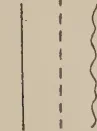
Boundary distinct
Boundary merging
Boundary undulating
Roots and Humus
Root mottling
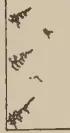
Humus or decomposing vegetable matter
Texture : Texture of horizons written opposite appropriate horizon.
Colour : Colour of horizons written opposite appropriate horizon.
Coarse Sand
Veins or pockets of clay
Large roots cut through
Roots (small)
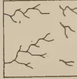
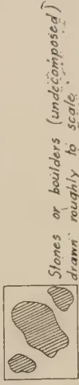
Stones or boulders (undecomposed)
drawn roughly to scale
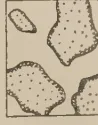
Decomposing rock or boulders
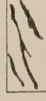
Bands of iron ore
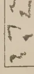
Red mottlings (or streaks) of iron oxide
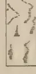
Yellow mottlings (or streaks) of iron oxide
Block by Survey Dept. Ceylon
Mineral Skeleton
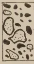
Ironstone nodular concretions or gravel (some cut through) drawn roughly to scale
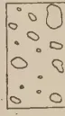
Quartz concretions drawn roughly to scale
GROUP 1
Kanumuldeniya I.
500
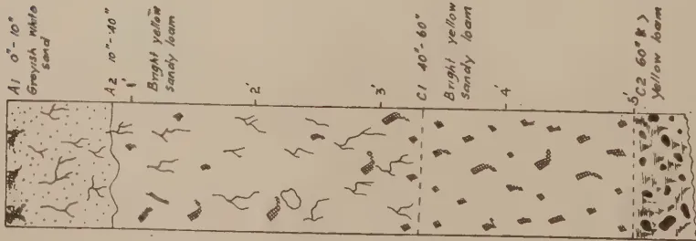
A1 0'-10"
Greyish white sand
A2 10'-40"
Bright yellow sandy loam
C1 40'-60"
Bright yellow sandy loam
C2 60'-8'
Yellow loam
DIAGRAM 1.
Alkagaha 100'-200'
Yatagampitiya Block
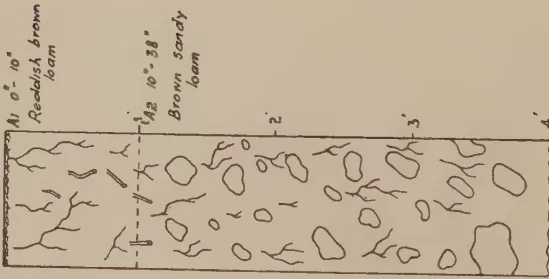
A1 0'-10"
Reddish brown loam
A2 10'-38"
Brown sandy loam
C1 40"
Reddish sand
DIAGRAM 2.
Banpara 300'
TOPO P.P. 2.
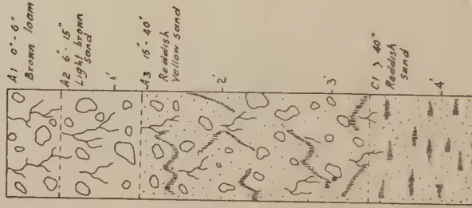
A1 0'-6"
Brown loam
A2 6'-15"
Light brown sand
A3 15'-40"
Reddish yellow sand
C1 40"
Reddish sand
DIAGRAM 3.
Walakada 300'
TOPO P.P. 2.
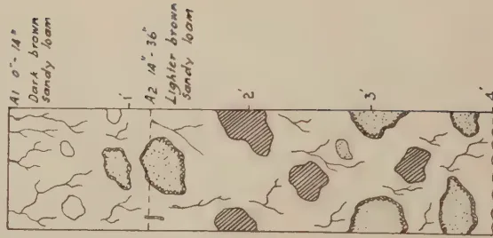
A1 0'-14"
Dark brown sandy loam
A2 14'-36"
Lighter brown sandy loam
2
3
DIAGRAM 4.
Block by Survey Dept. Ceylon.
GROUP II
Kottota Arboretum
200 - 300'
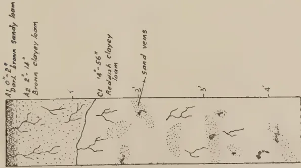
Diagram 5 shows a geological cross-section with three main layers labeled 1, 2, 3, and 4. Layer 1 is labeled A1 0"-2" Dark brown sandy loam. Layer 2 is labeled A2 2"-14" Brown clayey loam. Layer 3 is labeled C1 14"-56" Reddish clayey loam. Layer 4 is labeled sand veins. The diagram includes a dashed line separating layers 1 and 2, and a wavy line separating layers 3 and 4.
DIAGRAM 5.
Oliyagankele
250'
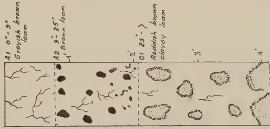
Diagram 6 shows a geological cross-section with four layers labeled 1, 2, 3, and 4. Layer 1 is labeled A1 0"-8" Grayish brown loam. Layer 2 is labeled A2 8"-25" Brown loam. Layer 3 is labeled C1 25"-> Reddish brown clayey loam. Layer 4 is unlabeled. The diagram includes a dashed line separating layers 1 and 2, and a wavy line separating layers 3 and 4.
DIAGRAM 6.
Digone 700-800'
TOPO P.P.1
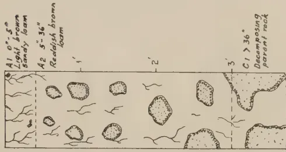
Diagram 7 shows a geological cross-section with three layers labeled 1, 2, and 3. Layer 1 is labeled A1 0"-5" Light brown sandy loam. Layer 2 is labeled A2 5"-36" Reddish brown loam. Layer 3 is labeled C1 > 36" Decomposing parent rock. The diagram includes a dashed line separating layers 1 and 2, and a wavy line separating layers 2 and 3.
DIAGRAM 7.
Denhena 600-700'
TOPO P.P.1
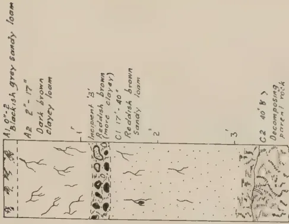
Diagram 8 shows a geological cross-section with four layers labeled 1, 2, 3, and 4. Layer 1 is labeled A1 0"-2" Blackish grey sandy loam. Layer 2 is labeled A2 2"-17" Dark brown clayey loam. Layer 3 is labeled C1 17"-40" Reddish brown sandy loam. Layer 4 is labeled C2 40' > Decomposing parent rock. The diagram includes a dashed line separating layers 1 and 2, and a wavy line separating layers 3 and 4.
DIAGRAM 8.
Block by Survey Dept. Ceylon.
GROUP 40
Masmullakele 1.
350'
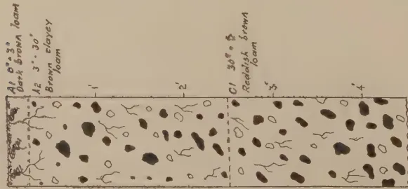
DIAGRAM 9.
Masmullakele 2.
200
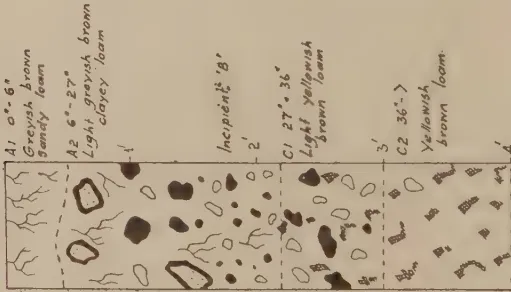
DIAGRAM 10.
Beraliya
600
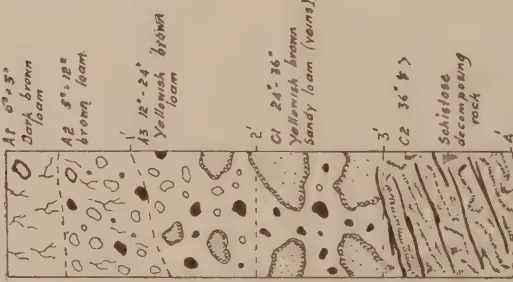
DIAGRAM 11.
Dediyagor 2.
200'-300'
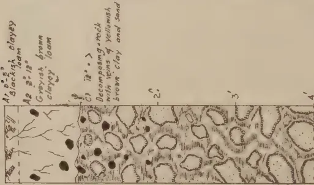
DIAGRAM 12.
Yakkotuna
100
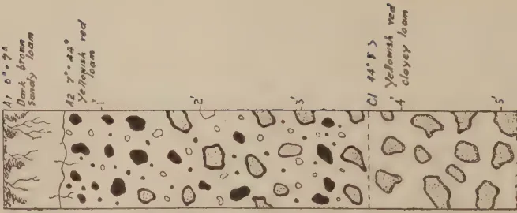
DIAGRAM 13.
Block by Suriney (10) and Gedon (13)
GROUP 2
Badulukele 1
250'
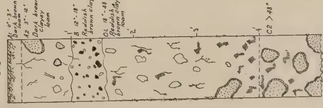
Diagram 14 shows a geological cross-section with four layers labeled A1, B, C1, and C2. Layer A1 (0'-5') is described as 'Greyish brown loam'. Layer B (5'-12') is 'Dark brown clayey loam'. Layer C1 (12'-18') is 'Reddish brown clay loam'. Layer C2 (>18') is 'Reddish brown clayey loam'. The diagram includes a scale bar at the bottom.
DIAGRAM 14.
Badulukele 2
250'
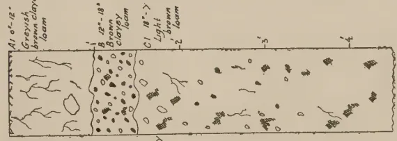
Diagram 15 shows a geological cross-section with three layers labeled A1, B, and C1. Layer A1 (0'-12') is 'Greyish brown clayey loam'. Layer B (12'-18') is 'Brown clayey loam'. Layer C1 (18') is 'Light brown clayey loam'. The diagram includes a scale bar at the bottom.
DIAGRAM 15.
Kekanaore
200'
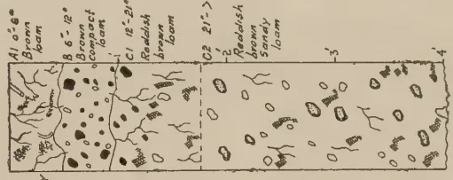
Diagram 16 shows a geological cross-section with five layers labeled A1, B, C1, C2, and C3. Layer A1 (0'-6') is 'Dark brown loam'. Layer B (6'-12') is 'Brown compact loam'. Layer C1 (12'-21') is 'Reddish brown loam'. Layer C2 (21') is 'Reddish brown sandy loam'. Layer C3 is 'Decomposing parent rock'. The diagram includes a scale bar at the bottom.
DIAGRAM 16.
Kanumuidenya 2
600'
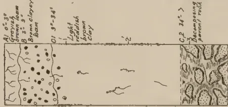
Diagram 17 shows a geological cross-section with three layers labeled A1, C1, and C2. Layer A1 (0'-3') is 'Greyish brown loam'. Layer C1 (3'-34') is 'Brown clayey loam'. Layer C2 (34') is 'Decomposing parent rock'. The diagram includes a scale bar at the bottom.
DIAGRAM 17.
Morapitiya 20-200'
TOP TO P.P.T.
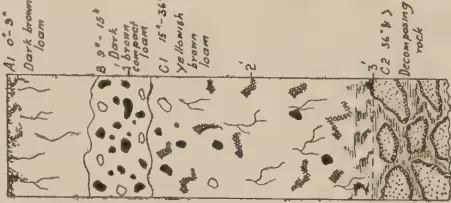
Diagram 18 shows a geological cross-section with four layers labeled A1, B, C1, and C2. Layer A1 (0'-3') is 'Dark brown loam'. Layer B (3'-15') is 'Dark compact loam'. Layer C1 (15'-36') is 'Yellowish brown loam'. Layer C2 (36') is 'Decomposing rock'. The diagram includes a scale bar at the bottom.
DIAGRAM 18.
Divadama
1600'
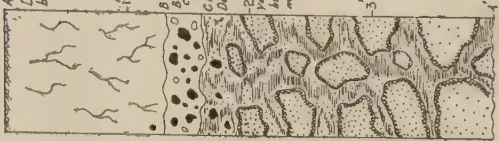
Diagram 19 shows a geological cross-section with three layers labeled A1, B, and C1. Layer A1 (0'-16') is 'Dark brown loam'. Layer B (16'-19') is 'Reddish brown loam'. Layer C1 (19') is 'Decomposing rock with 2 veins of yellowish brown clay mixed with gravel'. The diagram includes a scale bar at the bottom.
DIAGRAM 19.
Kottoma Reserve
150'
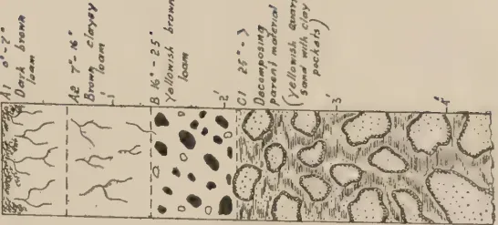
Diagram 20 shows a geological cross-section with four layers labeled A1, B, C1, and C2. Layer A1 (0'-2') is 'Dark brown loam'. Layer B (2'-16') is 'Brown clayey loam'. Layer C1 (16'-25') is 'Yellowish brown loam'. Layer C2 (25') is 'Decomposing parent material (10 inches quartz sand with clay pockets)'. The diagram includes a scale bar at the bottom.
DIAGRAM 20.
Block by Survey Dept. Caption
— GROUP V —
Galahitiya (Molkawai)
50' - 100'
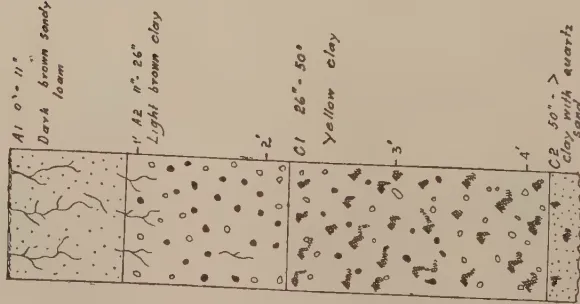
Diagram 27 shows a geological cross-section with four layers. Layer A1 is dark brown sandy loam, 0' to 11' thick. Layer A2 is light brown clay, 12' to 26' thick. Layer C1 is yellow clay, 26' to 50' thick. Layer C2 is clay with quartz, 50' and more thick. The layers are numbered 1, 2, 3, and 4 from top to bottom.
DIAGRAM 27.
— GROUP VII —
Yatagampitiya Block
100' - 200'
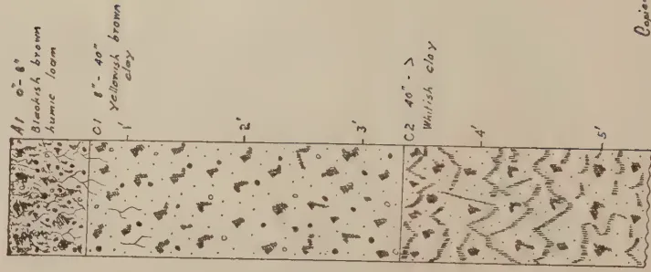
Diagram 29 shows a geological cross-section with five layers. Layer A1 is bluish brown humic loam, 0' to 8' thick. Layer C1 is yellowish brown clay, 8' to 40' thick. Layer C2 is whitish clay, 40' and more thick. Layers 4 and 5 are at the bottom. The layers are numbered 1, 2, 3, 4, and 5 from top to bottom.
DIAGRAM 29.
Prepared by
S. M. D. Raphael
R.P. 20-9-39.
Block by Survey Dept. Ceylon.
GROUP VI
Yakupitiya 300'
Kaligalmukalana
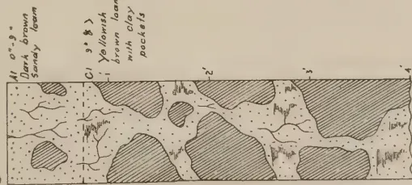
DIAGRAM 21.
Suryandakanda 400'-500'
Kaligalmukalana
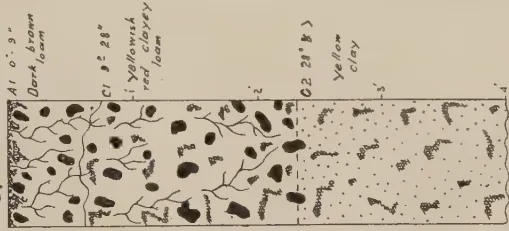
DIAGRAM 22.
Botalawa 900'-1000'
Kaligalmukalana
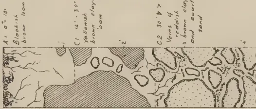
DIAGRAM 23.
Dediyaqala 1.
100'-200'
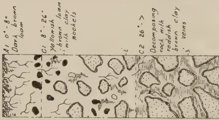
DIAGRAM 24.
Bambarawana
200'
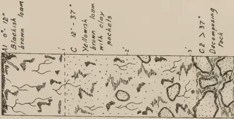
DIAGRAM 25.
Yagirala
200'
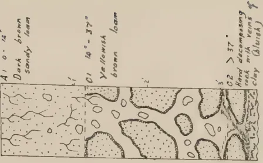
DIAGRAM 26.
Block by Survey Dept. Section
This image is a scan of a blank page. The paper has a light beige or cream-colored tint. There are a few very small, dark specks scattered across the surface, which appear to be scanning artifacts or dust particles. No text, lines, or other markings are present on the page. 279G. V. WICKRAMASEKERA, Dip. Agric. (Poona), A.I.C.T.A. (Trinidad),
ACTING PADDY OFFICER
AS far as the writer is aware, no authentic case of polyembryony in rice has yet been recorded. Kuwada (1) in his cytological studies of Oryza sativa L. records an "abnormal formation of two embryo sac mother cells". It is claimed that this suggests the possibility of polyembryony in rice. Komura (2) records a rice grain which, upon germination, produced two plumules which reached maturity. Rodrigo (3) records a rice grain of the variety Initiw which, on germination, produced two plumules each with a primary radicle. The seed was normal-sized, and when about a fourth of the hull of the seedling was removed, it was observed that each of the plumules had a separate radicle. The claim that the germinated seed is a case of polyembryony in rice is based on "the presence of two distinct primary radicles". About 107,000 grains of each of Initiw and Tiniaong were germinated. One seed of the latter produced two plumules while none of the former produced more than one plumule. Jenkin W. Jones (4) records a case in which a seed of a cross between the rice varieties Yosemite × Nimai Kawa Mochi made at Shafter, California, in 1926, produced two hybrid seedlings which on examination were found to come from one grain. One seedling produced 15 and the other 16 panicles. The caryopsis was not dissected in any of the recorded cases of polyembryony to ascertain whether more than one seed were enclosed within the glumes.
At Peradeniya in trials made in pot cultures to ascertain the maximum degree of salinity which some varieties are reputed to tolerate at different stages of their growth, T.E.B. 1, a variety from Travancore, was observed to produce a seedling with two plumules and two primary radicles, i.e., one for each plumule. On dissection it was found that two separate seeds were enclosed within the glumes of a single caryopsis. When a few grains of this variety were examined, it was observed that several had two to three separate seeds enclosed within the glumes of a single caryopsis. Several of the fresh seeds on germination produced two or three plumules with a corresponding number of primary radicles. (Plate I., Fig. A A' & B B'.)
280Eight days after these seeds germinated, the glumes were removed and the seedlings separated out and grown in pots until they reached maturity. The spikelets of these inflorescences contained from 1 to 3 pairs of stigma and a corresponding number of ovaries (Plate I., Fig. C.). Each caryopsis of the matured grains contained 1-3 seeds. Some of the grains were partially formed.
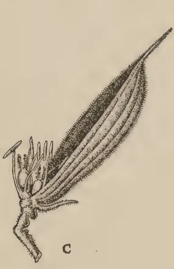
A detailed botanical drawing of a seed. The seed is elongated and tapers to a point. It is covered in fine, short hairs. At the base of the seed, there is a small, fleshy structure with several short, pointed projections.
C
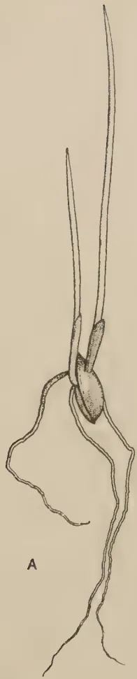
A botanical drawing of a seed with a long, thin, hair-like appendage extending upwards. The seed itself is oval-shaped. Below the seed, a root system is shown, consisting of a main root and several smaller, branching roots.
A
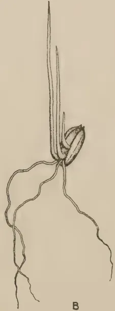
A botanical drawing of a seed with a long, thin, hair-like appendage extending upwards. The seed is oval-shaped. Below the seed, a root system is shown, consisting of a main root and several smaller, branching roots.
B
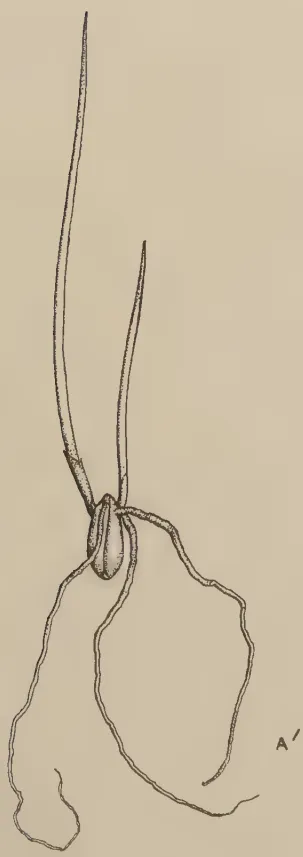
A botanical drawing of a seed with a long, thin, hair-like appendage extending upwards. The seed is oval-shaped. Below the seed, a root system is shown, consisting of a main root and several smaller, branching roots.
A'
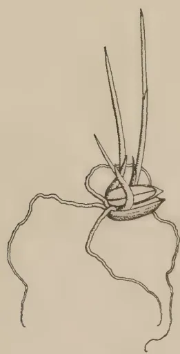
A botanical drawing of a seed with a long, thin, hair-like appendage extending upwards. The seed is oval-shaped. Below the seed, a root system is shown, consisting of a main root and several smaller, branching roots.
B'
Block by Survey Dept. Ceylon.
PLATE I.
This image is a scan of a blank page. The paper has a light beige or cream-colored tint. There are a few very small, dark specks scattered across the surface, which appear to be scanning artifacts or dust particles. No text, lines, or other markings are present on the page. 281J. C. HUTSON, B.A., Ph.D.,
ENTOMOLOGIST
THE females of the citrus and mango fruit-fly usually start laying eggs in fruits, such as oranges, grapefruit, mangoes, &c., just before these begin to ripen. The eggs are laid inside the fruit and hatch within one week into maggots which tunnel about inside the fruit, causing it to decay and sometimes to drop early. The maggots are full-grown in 1 to 2 weeks and come out of the fruit, drop to the ground and form their puparia or cocoons about 2 inches below the surface. Maggots emerging from fallen fruit usually pupate in the soil under or near the fruit. The pupal stage lasts about 1 to 2 weeks, after which the male and female flies come out of the soil in approximately equal numbers. The female flies may remain for at least one month after emergence before laying their eggs, and since they require food before mating and egg-laying, they can frequently be attracted to feed on a sweetened poisoned bait and be killed before they can lay their eggs.
This pest is usually present in considerable numbers in any citrus or mango plantation during the fruiting seasons, but the flies themselves frequently pass unnoticed, and the presence of the pest is not usually detected until much damage has been done and the fruit has begun to fall prematurely or turn rotten on the trees as the result of maggot infestation. By that time it is usually too late to start a control campaign with any real prospect of success and nothing can be done beyond the regular collection and destruction of fallen fruit.
These notes are intended to show that this fruit-fly can be satisfactorily controlled and that most of the crop in a garden or orchard can be saved if the suggested control campaign is started in good time and carried out thoroughly and systematically. It will be noted that (1) citronella oil is a very useful indicator of the seasonal prevalence of this fruit-fly; (2) that a sweetened poisoned bait can be used to the best advantage during the seasons of prevalence; (3) that bagging of half
282to two-thirds grown fruits serves to protect them from subsequent attacks of fruit-flies to a great extent, but does nothing towards reducing the numbers of these flies; and (4) that the systematic collection and suitable disposal of all fallen fruits are essential to the success of any other control measures employed.
(for males of the citrus and mango fruit-fly)
Experiments have shown that the ordinary commercial citronella oil is quite attractive to male flies of the citrus and mango fruit-fly (Dacus ferrugineus) when exposed in glass jars two-thirds full of water with about 10 drops of the oil on the water. The jar can be hung on the branch of a tree by an arrangement of wires and the jar-cover or a cigarette tin cover should be suspended about two inches above the jar to keep out heavy rains. The water and oil should be renewed twice a week during dry weather and once a week during wet weather and the catch of flies counted. The males of the citrus fruit-fly are small, dark-brown insects, a little larger than house flies, with black and yellow bands and stripes on the body and a pair of clear wings. Occasionally a few other flies and other smaller or larger insects may be attracted to the citronella jars, but the fruit-flies can soon be distinguished. The type of tin recommended for poisoned bait can also be used for the citronella oil lure without the cloths, but may not be quite so effective as the glass jars.
Since citronella oil does not attract the egg-laying female flies, it has no special value as a control measure for this pest. This oil when exposed in jars of water does, however, serve as an indicator that the pest is present in an orchard or garden, since it is known that both male and female flies of this species may be present at about the same times of the year and in approximately equal numbers.
It may be mentioned that the vanilla essence, ammonia and water lure recommended in Australia has not proved attractive to our fruit-flies.
In order to find out whether the citrus fruit-fly is present in a fruit area it is necessary to expose two or three citronella lure jars on trees as soon as the earlier fruits are about half-grown. When the number of male fruit-flies per jar rises to about a dozen or more in two or three successive weeks, then it is usually advisable to start using the poisoned bait according to the instructions given.
There may be two periods during the year when fruit-flies are unusually numerous, that is, a major and a minor season of prevalence, and these usually occur when citrus or mango trees
cf 20
156
84
or both are in fruit. These two periods of prevalence may vary somewhat according to the district, and fruit growers can obtain this information for their own districts by the use of the citronella lure jars during the early part of the fruiting seasons. For instance, at Peradeniya there is a minor season of fruit-fly prevalence during February and March, coinciding more or less with the secondary fruiting season of citrus and with the mango fruiting season. This is followed by a decline in numbers of flies during April and May. Then there is another marked rise in numbers to the major season of prevalence from June to August coinciding approximately with the main fruiting season of citrus.
(for both sexes of the fruit fly)
Poisoned bait can be used to the best advantage during the periods when fruit-flies are likely to be most numerous, that is, mainly during the fruiting seasons of citrus and mango. If citronella jars have not been used, then baiting should be started about six weeks before the earlier fruits are expected to ripen and carried on throughout the season. It is generally unnecessary to use it at other times of the year.
The following is the formula for making the bait :—
| Either sodium silicofluoride powder or lead arsenate powder | 2 | oz. |
| Cheap sugar | .. | 2 lb. |
| Water | .. | 4 gallons. |
The same proportions can be used for larger or smaller quantities. Mix the powder with a little water and stir this into the sweetened water made by dissolving the sugar. Sodium silicofluoride is a non-arsenical powder, but if it is not available the lead arsenate can be used as a substitute, but it is more expensive.
Bait tins.—The liquid poisoned bait can be exposed in cigarette tins specially prepared for the purpose. Six vertical cuts about one inch deep are made at intervals in the top edge of each tin and alternate pieces between the cuts are bent outwards to form three horizontal flaps; the tin is covered to keep out rain and wires are inserted into the pieces between the flaps so that the tin can be hung on to a branch. Each tin is supplied with about 3 oz. of the bait and small strips of cloth or lamp-wick are placed with one end in the liquid and the other end projecting slightly beyond the edge of each flap. The flies come to feed on the wet clothes and then fly away to die elsewhere so that no dead flies will be found in the tins, as in the case of the citronella lure.
2—J. N. 83067 (4/39)
284Only about 24 trees per acre need be baited at one time, using one tin per tree, and it is estimated that about 4 pints of bait will be required per acre for each application, using about 3 oz. of liquid per tin. The bait tins should be renewed periodically when they become too rusty inside and the liquid can be replenished as required. The exposure of the poisoned bait in tins insures that the flies have continuous access to the poison, whereas the liquid dries up fairly soon when sprinkled in large drops and may lose some of its effectiveness or be washed off by rain. If an orchard is known to be heavily infested with fruit-fly, it is advisable to bait one-third of the area with tins and to sprinkle at least another one-third periodically in rotation for the first two or three weeks after starting the treatment; a less intensive programme can be carried on thereafter.
Sprinkling.—The same poisoned bait can be applied to the trees with an ordinary garden syringe and the liquid can be squirted into the air so as to fall on the leaves in large drops, and while applying the liquid the operator can walk round the tree. If a syringe is not available, the bait can be sprinkled on to the leaves with a bunch of twigs or a broom. If sprinkling of the trees is considered undesirable, bunches of twigs or bundles of paddy straw can be hung on the trees and sprinkled with the bait. The bait should be used two or three times a week during the early part of the season and once a week later on, if the flies are being controlled. It should be applied during the late afternoon in fine weather and repeated after heavy rain.
It is usually necessary to sprinkle only about one-third of the trees in rotation in any given area, or about 24 trees in an acre of about 70 trees. For each application by sprinkling, one pint of the liquid bait will treat 3 or 4 trees in full bearing, so that this amount will be sufficient for a small garden of about one dozen trees. About one gallon will be required per acre for each application. As regards costs, it is estimated that, using sodium silicofluoride, one gallon of the bait will cost about 7 cents, while with lead arsenate as the poison the cost per gallon will be about 10 cents. One acre can therefore be treated for about 10 cents per application for cost of materials alone. Lead arsenate costs about Rs. 1.50 per lb. and sodium silicofluoride about 50 cents per lb. at Cargills, Colombo, and the cost of freight will have to be added.
The following poisoned bait programme is suggested for an orange grove of ten acres situated in a dry zone district, assuming that the fruiting season starts at the beginning of December and lasts for about four months until the end of March.
The poisoned bait should be started about six weeks before the first fruits are expected to ripen and should be continued for about five months, that is, the baiting season should extend
285from about the middle of October until about the middle of March. During the first three months, which are likely to be wet, it is preferable to expose the bait in the tins, so as to protect it as far as possible from heavy rains, and to employ the sprinkling method of application during the last two months, which are normally dry. Advantage can, however, be taken of any dry periods during the monsoon to sprinkle the bait instead of using the tins or to combine the two methods in a more intensive baiting programme.
Approximate cost of baiting in tins.—It has been explained previously that about 24 tins will be needed per acre, or 240 tins for ten acres; also that about 4 pints of bait will be required per acre for each application, or about 5 gallons for ten acres per application. During a tin-baiting season of three months, 24 applications will be necessary at two applications per week, so that 120 gallons of bait will be required for the ten acres for three months. As regards labour, two men for half a day at 30 cents each can renew the bait in 240 tins, costing 60 cents per application, or Rs. 14.40 for the 24 applications during the three months. The following will be the approximate cost for ten acres:—
| Rs. c. | |
|---|---|
| 240 tins cut and fitted with wire at 4 cents per tin .. | 9 60 |
| One renewal of 240 tins using old wire at 3 cents per tin .. | 7 20 |
| 120 gallons of bait at 7 cents per gallon .. | 8 40 |
| Labour for 24 applications at 60 cents a time .. | 14 40 |
| 39 60 |
The cost of baiting 240 tins for the three months is therefore Rs. 4.00 per acre.
Approximate cost of sprinkling.—The bait can be applied for two months during dry weather, and 16 applications will be required at two per week, using one gallon per acre or ten gallons for the whole area per application at 7 cents per gallon. If the liquid bait is sprinkled on to bunches of twigs or bundles of straw hung on the trees, no special apparatus will be required, as a bunch of leafy twigs can be used to sprinkle the liquid. Two men for half a day at 30 cents a man can treat the 240 trees, costing 60 cents per application.
| Rs. c. | |
|---|---|
| 16 applications over ten acres at 70 cents per application | 11 20 |
| Labour for 16 applications at 60 cents a time .. | 9 60 |
| Total .. | 20 80 |
The cost of sprinkling 240 trees for the two months is therefore about Rs. 2.00 per acre. The total cost of using the two baiting treatments for five months over ten acres will be about Rs. 6.00 per acre. The above cost will be increased to nearly Rs. 7.00 per acre, if lead arsenate has to be used instead of sodium silicofluoride.
It may be mentioned that the fruit-fly poisoned bait should also be useful in controlling the large fruit-piercing moths which puncture the fruit in order to suck the juice. Punctured fruits turn rotten and drop, and the damage is sometimes mistaken for that caused by fruit-flies. The puncture made by the moth can be seen as a small round hole from which juice oozes freely when the fruit is squeezed, but the egg-laying puncture made by a fruit-fly soon closes up and is not noticeable until a small decaying patch begins to form.
In The Tropical Agriculturist, February, 1936, pp. 100-101, a note appeared on the bagging of grapefruit and it was stated therein that bagging kept the fruit free from fruit-fly attack and from infection by citrus canker. Further trials made on the Experiment Station, Peradeniya, by the Principal, Farm School, Peradeniya, have indicated that bagging of grapefruit has proved to be quite effective in preventing attack by fruit-fly and that unbagged fruit is usually heavily attacked.
It should be emphasized that bagging alone does not in any way help to control fruit-fly, but merely prevents the flies from laying their eggs in the fruit. Any unbagged fruit is liable to serious infestation. Therefore, if bagging of fruit is employed, it is advisable that other measures, such as the use of poisoned bait and destruction of attacked fruit, should be taken to control fruit-fly.
Usually single fruits are bagged with the smaller size grease-proof paper bag (8" × 10") costing Rs. 7.50 per 1,000 or of 1 cent per bag, and approximately two bags are required for each fruit up to the maturity of the same. The cost per bag including twine, labour, &c., is estimated at 2½ cents up to the maturity of the fruit. Sometimes it is necessary to include two or three fruits in a larger bag (12" × 14") costing Rs. 10 per 1,000.
If fruit-fly is to be effectively controlled in citrus and mango areas, it is essential that all attacked and fallen fruit should be collected and destroyed from the time that the first attacked fruit is noticed or the first good-sized fruit has fallen.
287This should be done daily throughout the fruiting season as a routine measure whether other control measures are employed or not. If regular collection is started early, the daily number to be destroyed should be very small and easily disposed of. All such fruit should be burnt at once or thrown into a kerosene tin of boiling water, so that all maggots still remaining in the fruits are killed. All maggots which escape destruction will pupate in the soil and emerge later as flies to attack any ripening fruit. Large accumulations of attacked and fallen fruit are not only a prolific source of fruit-fly, but cannot be destroyed easily and effectively, and usually the only method available is burial in pits. But burial is not entirely effective, since fruit-flies can emerge through several inches of soil. The systematic and complete destruction of all infested fruit is essential for the success of any other control measures. Therefore all such fruit should be destroyed daily so that it will not accumulate to such an extent as to make its disposal difficult.
288DEPARTMENTAL NOTESPLANT IMPORT LEGISLATION IN CEYLONJ. C. HUTSON, B.A., Ph.D.,
ENTOMOLOGIST
THE purpose of this article is to trace very briefly the development of plant import legislation in Ceylon, indicating some of the more important changes which have occurred since the first steps were taken nearly forty years ago to keep out foreign plant pests and diseases. Special reference will also be made later to the inspection and fumigation work now being done at the new Colombo Port Commission Fumigatorium in respect of both plant imports and exports. In addition to the above type of restrictive import legislation, provision is also made in Ceylon, as in most other countries, for the control by legislative action of certain pests and diseases already established in the Island. But with this aspect of the subject we are not concerned in this article.
In the course of the earlier agricultural development of various countries, involving the importation of many new plants, it may be said that little or no attention was paid to the insect pests, fungous diseases, and weeds which might be brought in with these plant imports. The result of this past indifference has been an unintentional interchange of many undesirable insects and other animals and numerous plant diseases and weeds between most countries. These pests and diseases were able to come in undetected and, as so often happens, became far more serious in their new surroundings than they were in their original homes. It is only within comparatively recent times, that is within the last half-century or so, that the value of legislation for restricting the spread of pests and diseases from one country to another has been recognized. But since the beginning of the present century, the progress made in such restrictive legislation has been rapid, with the result that at the present time it is probable that all countries possessing a permanent organization for the investigation of insect pests and fungous diseases have passed special regulations for preventing, so far as is possible, the introduction of new pests and diseases from other countries. Usually such restrictive legislation not only includes the total prohibition of the importation of certain plants from specified countries, but also imposes certain conditions on the importation of most other plant material.
289So far as Ceylon is concerned, one has only to mention such unwelcome importations as the African or Kalutara snail, bunchy top of plantains, water hyacinth, and the coffee berry-borer which have all found a permanent home in the Island to emphasize the necessity for preventing further introductions, such as the cotton boll weevil and the Mediterranean fruit-fly.
Ceylon's first plant import legislation came into force on February 28, 1901, when the "Insect Pest and Quarantine Ordinance", No. 5 of 1901, was passed. This ordinance empowered the Governor, with the advice of the Executive Council, to make regulations for preventing the introduction into this Island of insect or fungous pests or plant diseases as well as the spread of such pests and diseases in the Island. Provision was made for "prohibiting the importation into this Island from places beyond sea of any plants" and for cleansing or disinfecting and if necessary destroying without compensation "all plants or the packages, cases, pots or coverings in which they may be packed, which shall be found or suspected to be infected with any insect or fungus or plant disease".
According to Petch (1913), under this ordinance in September, 1901, the importation of cacao plants from any part of the Dutch East Indies was prohibited in order to prevent the introduction of cacao diseases from those colonies, and in July, 1903, the importation of pepper plants into Ceylon from any part of India was prohibited consequent upon serious outbreaks of disease in pepper in South India. Dried seed of the pepper plant for commercial use was exempted from this prohibition. In the above instances total prohibition was considered to be the only possible course at that time, but these prohibitions were removed in 1924.
Petch (1913) states that in 1903 a fumigatorium for the disinfection of plants which might introduce injurious insects was established, and regulations were issued in August, 1903. It was soon found, however, that, owing to the rapid increase of foreign fruit imports, the fumigatorium was too small to cope with the imports at certain seasons without causing serious delay, and the regulations had to be withdrawn. It was not until 1906 that the enlarged fumigatorium at Kochchikade was ready, and an amended set of regulations was issued in July, 1906. These regulations provided amongst other things that most imported living plants, including all citrus fruits, shall,
290before being handed over to the consignee, be subject to treatment with hydrocyanic acid gas, or to such other treatment as may be deemed necessary by the Government Entomologist, at the Government fumigatorium at Kochchikade. Potatoes, onions, ginger, turmeric, and culinary vegetables imported for consumption were exempted from the above treatment. It was also stated that "a certificate of fumigation by some properly constituted authority at the port of shipment will be accepted as exempting fruit or plants from further treatment; but a certificate of mere inspection will not be so accepted". As will be seen later, this fumigatorium continued to function until 1927, with certain additions and improvements made to the building at intervals.
In August, 1909, cotton seed was specifically added to the list of plant imports requiring fumigation, and from September 1, 1912, coconuts in husk were allowed in only at the port of Colombo and were to be subjected to fumigation; husked nuts were exempted from treatment. At the present time cotton seed is allowed entry only through the port of Colombo, and any seed or unginned cotton or raw ginned cotton of any species of Gossypium grown in the Western Hemisphere is allowed in only through Colombo via Bombay and must be accompanied by a fumigation certificate from the Bombay Customs. These precautions are taken to prevent the introduction of the cotton boll weevil.
From October, 1910, owing to the spread of Blister Blight in Northern India, it was decided that Indian tea seed, which was then being imported into Ceylon in large quantities, should be imported only through the port of Colombo and be subjected to disinfection with formalin vapour at the Colombo Fumigatorium, unless accompanied by a special certificate that Blister Blight did not exist within a radius of ten miles of the estate or garden on which the seed was grown. These regulations had the effect of limiting the supply of some of the best Indian tea seed and the importations of this seed from India gradually declined from about 5,000 cases in 1912 to about 350 cases in 1920. After it was shown by Gadd (1921) that the disinfection of tea seed as carried out in Colombo was not an adequate safeguard against the introduction of fungus pests with tea seed, the planting community recommended to Government that the importation of tea seed from India, either directly or indirectly, should be prohibited, and this prohibition came into force as from June 30, 1922.
Early in 1919 a half-time Fumigation Officer was appointed and improvements were made to the Fumigatorium during that year. In April, 1920, all the above plant import regulations were brought together under the Insect Pest and Quarantine (Amendment) Ordinance, No. 30 of 1919. Provision was also made in
291the regulations for the conveyance of most plant imports to the Kochchikade fumigatorium and for their fumigation or disinfection as deemed necessary by the Director of Agriculture. After treatment and payment of the prescribed fees, the consignee was given a certificate of fumigation and allowed to remove the articles.
In February, 1920, the importation of seeds or plants of Hevea (any species) was prohibited, but in 1924 total prohibition was restricted to the Western Hemisphere, while from the Eastern Hemisphere importation was allowed under permit in writing from the Director of Agriculture previously obtained, and these regulations are still in force.
The above-mentioned plant import legislation, which demanded a fumigation certificate from the country of origin or insisted that imports should be fumigated on arrival at Colombo, was continued until June, 1924, when the Plant Protection Ordinance, No. 10 of 1924, was passed. Before commenting on this, a few figures from available records of the amount of plant material imported up to the end of 1924 may be of interest. The records of citrus fruits and miscellaneous plant imports between 1906 and 1911 are no longer available. For the ten years out of the thirteen for which records are available from 1912 to 1924, the average number of cases of citrus fruits treated annually at the fumigatorium was about 650 and of miscellaneous plant consignments about 500. The citrus fruit importations were about double this average for the first two or three years of the above period, but fell considerably below the average between 1915 and 1920.
The Plant Protection Ordinance, No. 10 of 1924, continued most of the total or conditional prohibitions of certain plants listed under the previous ordinance. It required amongst other things that all plant imports (with certain exceptions in the case of imports for consumption) from a country whose inspection service is recognized shall be accompanied by an inspection certificate from the country of origin to the effect that such plants were inspected before export and were found to be free from pests and diseases. The presence of such a certificate does not, however, exempt plant imports from inspection on arrival in Colombo from fumigation if found infested and from destruction, if deemed necessary, in order to exclude any dangerous foreign pest or disease. Plant imports from countries where no recognized plant inspection service is maintained or which are not accompanied by a health certificate shall be inspected on arrival and shall receive further treatment, if necessary. By 1924 the issue of health certificates to accompany
3—J. N. 83067 (4/39) 292plant material from the country of origin was becoming a usual requirement in most countries possessing an organized plant inspection service, and Ceylon, while requiring certificates from certain countries, still retained the right to inspect certified consignments on arrival and to give them any necessary treatment.
This new procedure, involving the inspection of most plant imports, led to a considerable increase in the work of the half-time officer, and it soon became evident that the fumigatorium at Kochchikade was too far away for convenience, apart from its other disadvantages. The construction of a larger building in a more suitable site came under consideration, but meanwhile, in order to avoid undue delay in dealing with the growing volume of plant imports, apart from citrus fruits, during 1925 and 1926, it was arranged that all the smaller packages of plant material should be inspected at the Baggage Office and the General Post Office and only those requiring fumigation be sent to Kochchikade for treatment; all citrus fruits and larger plant consignments were landed direct at Kochchikade for inspection and fumigation if necessary. The situation was further relieved by the appointment of a whole-time Inspector from October 1, 1926, and the above arrangements were continued by him until November, 1927, when a new and enlarged fumigatorium was completed in the Imports Area of the Customs Premises. Since then all plant imports requiring inspection and fumigation have been sent to the fumigatorium for necessary action.
During the five years 1927 to 1931, the citrus fruit imports averaged about 6,470 cases and miscellaneous plants averaged about 1,075 annually. For the next six years (1932 to 1937) the average number of cases of citrus fruit rose to about 9,100, with the record number of 13,581 in 1935, while the other plant consignments increased to about 1,950 annually. Detailed information on the plant imports for the year 1935 was given in an article by Drieberg in The Tropical Agriculturist, July, 1936, pp. 12-16.
As a result of the discovery during 1936 of living material of the Mediterranean fruit fly (Ceratitis capitata) in certain consignments of citrus fruits on arrival in Colombo, it became necessary to arrange for the inspection on board ship of all citrus fruit imports from all countries bordering on, or situated in, the Mediterranean Sea, and to destroy at sea all such consignments found to be infested with this pest. Consignments found to be free from the fruit-fly were allowed to be landed and, if infested with scale insects, were fumigated. This board ship inspection was subsequently extended to include all citrus fruit imports from other countries known to have the fruit-fly
This image is a scan of a blank page. The paper has a light beige or cream-colored tint. There are some very faint, blurry marks scattered across the surface, which appear to be scanning artifacts or minor imperfections in the paper itself. No text, lines, or other graphical elements are present.![A black and white photograph showing five men in a room with a diamond-patterned ceiling. They are gathered around a long table covered with a white cloth, inspecting large, rectangular, light-colored blocks. The men are dressed in early 20th-century attire, including white shirts and ties. The room has a large window on the left and a doorway on the right. A small framed picture is on the wall. The caption below the image reads: 'PLATE 1.--INSPECTION OF IMPORTED FRESH FRUIT AT THE COLOMBO FUMIGATORUM.' and 'BLOCK BY SURVEY DEPT. CAYON'.](e8df15f64aef7911833642dbf8d895ee_1_img.webp) A black and white photograph showing five men in a room with a diamond-patterned ceiling. They are gathered around a long table covered with a white cloth, inspecting large, rectangular, light-colored blocks. The men are dressed in early 20th-century attire, including white shirts and ties. The room has a large window on the left and a doorway on the right. A small framed picture is on the wall. The caption below the image reads: 'PLATE 1.--INSPECTION OF IMPORTED FRESH FRUIT AT THE COLOMBO FUMIGATORUM.' and 'BLOCK BY SURVEY DEPT. CAYON'.
A black and white photograph showing five men in a room with a diamond-patterned ceiling. They are gathered around a long table covered with a white cloth, inspecting large, rectangular, light-colored blocks. The men are dressed in early 20th-century attire, including white shirts and ties. The room has a large window on the left and a doorway on the right. A small framed picture is on the wall. The caption below the image reads: 'PLATE 1.--INSPECTION OF IMPORTED FRESH FRUIT AT THE COLOMBO FUMIGATORUM.' and 'BLOCK BY SURVEY DEPT. CAYON'.PLATE 1.--INSPECTION OF IMPORTED FRESH FRUIT AT THE COLOMBO FUMIGATORUM.
BLOCK BY SURVEY DEPT. CAYON
293and was carried out until the new plant import regulations came into force on September 30, 1938, imposing certain conditions on the import of all fresh fruit. A copy of these regulations is printed as Appendix A to this article, and it may be mentioned that a departmental note in explanation of them appeared in The Tropical Agriculturist, January, 1939, pp. 32, 33.
Meanwhile in 1936, the new Colombo Port Commission Fumigatorium was built in the Exports Area of the Customs premises in order to meet the requirements of the Phillippine Islands that all cases of cacao beans exported from Ceylon to those islands must be accompanied by a fumigation certificate as from January 1, 1937. Detailed information on the plant export fumigation work will be given later, and it will be sufficient to mention here that all plant import inspection and fumigation work has also been accommodated in the new fumigatorium. Since this building is equipped for fumigation with liquid hydrocyanic acid (HCN), the old pot method of fumigation was superseded by this method for the treatment of plant imports as well as exports.
The introduction of the new plant import regulations, involving the inspection of all fresh fruit imported instead of only citrus fruit as under the old regulations, has led to an enormous increase in the import inspection work at the new fumigatorium. For the six months from October 1, 1938, to March 31, 1939, during which these regulations have been in force, the number of fresh fruit packages received at the fumigatorium for inspection and other necessary action was 48,093 as compared with 4,729 for the corresponding period during 1937-38, an increase of more than ten fold. The total number of packages of all plant imports inspected at the fumigatorium during 1938 was 32,515, as compared with 14,633 in 1935, 10,658 in 1936 and 13,676 in 1937. This marked increase is due to the very much larger number of fresh fruit imports which passed through the fumigatorium during the fourth quarter of 1938, as the result of the new plant import regulations. Plate 1 shows the inspection of imported fresh fruit in progress at the Colombo Fumigatorium. The directions issued by the Principal Collector of Customs for the inspection and fumigation of imported plant material during and after office hours are reproduced as Appendix B.
By 1924, in view of the adoption in most countries of more stringent legislation to prevent the introduction of pests and diseases from other countries, it became necessary for Ceylon to
294make provision for the inspection and fumigation of certain kinds of plant exports and for the issue of health certificates required by other countries. At first these export certificates were issued mainly at Peradeniya to cover all consignments of plant material exported by the Department of Agriculture, while estates desiring to export tea seed to foreign countries were supplied with health certificates after representative samples of their tea seed had been examined at Peradeniya. This plant material intended for export was first inspected by the Mycologist and the Entomologist and fumigated by the latter if considered necessary or advisable; the covering certificates, signed by both officers, were then issued in duplicate, and this procedure is still being followed.
Prior to 1925 any necessary fumigation was done in the small fumigation chamber then available in the Royal Botanic Gardens, but subsequently fumigation has been carried out in the fumigatorium attached to the Entomological Laboratory. During the first few years an occasional export certificate was issued by the Fumigation Officer in Colombo for consignments which could not be conveniently examined at Peradeniya.
By 1929 the number of packages of exported plants examined at Peradeniya had increased to over 200, and it was in that year that the Inspector, Colombo Fumigatorium, first started the regular issue of export health certificates. During the five years 1930 to 1934, the number of packages of plant exports examined annually at Peradeniya averaged 403, but during the last four years up to the end of 1938 the annual average had dropped to 287, mainly as the result of the increasing number of export certificates issued in Colombo.
As the result of a resolution passed at the Third Imperial Mycological Conference held in London in 1934, a uniform type of health certificate has been adopted for use throughout the Empire. A copy of the Ceylon certificate is given as Appendix C.
The construction of the Colombo Port Commission Fumigatorium in 1936 has led to an enormous increase in the issue of export certificates from Colombo, since these certificates include not only fumigation certificates issued to cover the cacao exported to the Philippine Islands but also inspection certificates accompanying other food products, such as husked coconuts and desiccated coconut, to certain countries requiring such certificates. The following brief notes on this new building and on the process of cacao fumigation may be of interest.
A general view of the building is shown in Plate 2. On the left is an office and a store for chemicals. The main part of the building is divided into four chambers, three of which are devoted for the fumigation of bags of cacao beans prior to export,
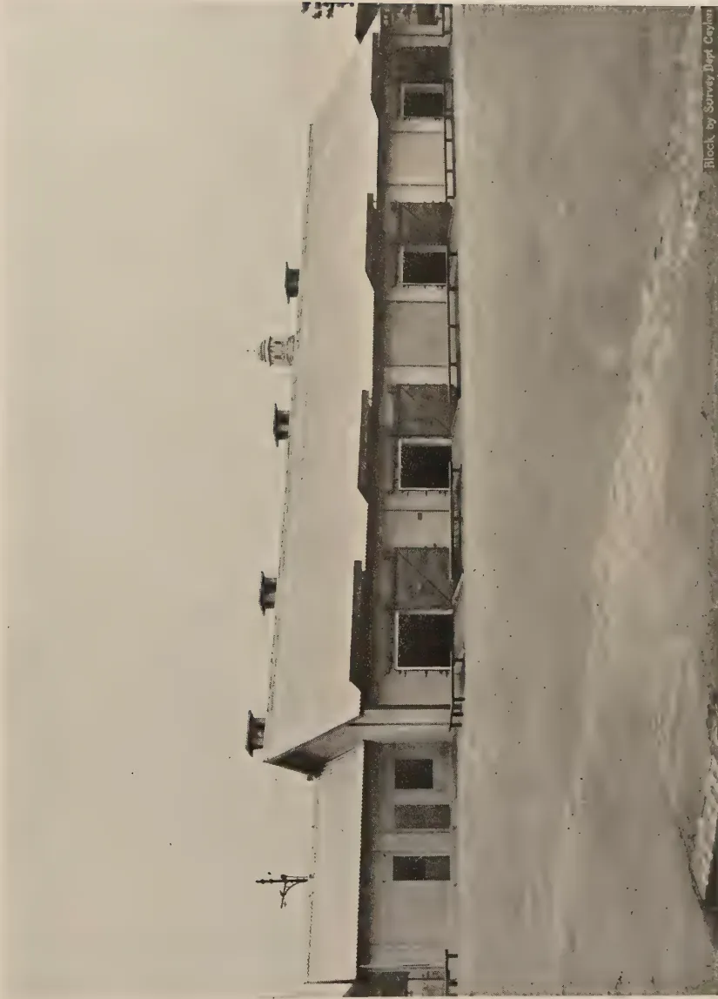
A black and white photograph of a long, two-story building with a flat roof and several windows. A small tower or cupola is visible on the left side of the building. The building is situated on a flat, open plain under a clear sky. The photograph is oriented horizontally on the page.Block by Survey Dept. Cayman
PLATE 2.—GENERAL VIEW OF THE COLOMBO CUSTOMS FUMIGATORUM BUILDING.
10
11
12
13
14
This image is a scan of a blank page. The paper has a light beige or cream-colored tint. There are a few very small, faint dark spots scattered across the surface, which appear to be scanning artifacts or minor imperfections in the paper. No text, lines, or other markings are present.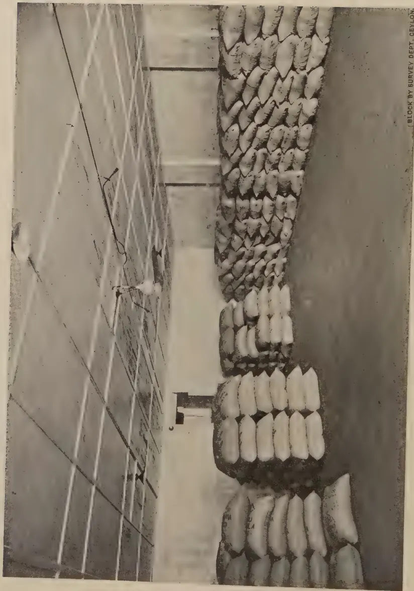
BLOCK BY SURVEY DEPT. CEYLON.
PLATE 3.—ARRANGEMENT OF CACAO BAGS FOR FUMIGATION AT THE COLOMBO FUMIGATORIUM.
295and the other is fitted for the inspection and fumigation of plant imports. The first chamber on the left has a capacity of 5,200 cubic feet and is designed to accommodate nearly 400 cacao bags. Each of the second and third chambers has a capacity of 12,800 cubic feet and will each hold nearly 1,100 cacao bags. The bags are stocked two bags wide and six bags high, as indicated in Plate 3. This arrangement gives an adequate penetration of gas to all bags.
The fumigant used is liquid HCN which is stored in metal cylinders and is applied under pressure through a pipe connection outside each chamber. The liquid is discharged inside the chamber from pipes on the ceiling in the form of a fine spray which is immediately vaporized under Colombo conditions. The chambers are provided with propeller fans which give an even diffusion of the gas. For the fumigation of cacao bags a dosage of 24 oz. of HCN per 1,000 cubic feet is given for 24 hours and this is followed by a very thorough ventilation of the chamber for 40 hours. Ventilation is carried out by means of suction fans in recessed ducts at the rear of each chamber, and each fan is designed to draw off 1,850 cubic feet per minute. Above the fan is a trap-door sealing the duct during fumigation. After fumigation, the trap-door is opened, the ventilation fan is started and the chamber door in front is unsealed and gradually opened until it is fully opened at the end of 30 minutes. The technique necessary for fumigation with liquid HCN is quite complicated, and under no conditions can the fumigation be carried out by less than two experienced operators.
A weekly fumigation of outgoing bags of cacao beans is given on Fridays, starting at 4 p.m., after the bags have been stacked in the chambers. The ventilation is started at 4 p.m. on Saturdays and is continued until 8 a.m. on Mondays. During dry weather a chamber is usually completely ventilated after about 40 hours, but during wet weather, when the percentage of humidity is higher, it may be necessary to continue the ventilation until the Monday afternoon. Emergency fumigations of cacao bags are sometimes given on Mondays.
During 1937 certificates were issued by the Inspector to cover a total of 59,728 packages of exported plant material. Of this number, fumigation certificates were issued for about 34,500 bags of cacao beans, while the remainder were mostly inspection certificates to accompany the coconut products previously mentioned. In 1938, a total of 83,192 export packages were dealt with by the Inspector, of which nearly 36,000 were cacao bags fumigated prior to export. Most of the remainder were bags of husked coconuts and cases of desiccated coconut for which inspection certificates only were issued.
296ACKNOWLEDGMENTSThe author's thanks for information about the Colombo Port Commission Fumigatorium and about the work carried on there are due to Dr. F. C. Coyne, London Chemist of the Imperial Chemical Industries, Limited, who superintended the equipment of the building, and to Mr. F. D. Peries, Inspector, Colombo Fumigatorium.
REFERENCESPetch, T., (1913) .. Diseases and Pests Legislation in Ceylon. Department of Agriculture, Ceylon, Bulletin No. 6.
Gadd, C. H. (1921) .. The Efficacy of Formaldehyde Vapour as a Disinfectant of Tea Seed. Department of Agriculture Ceylon, Bulletin No. 51.
Colonial Office Publication No. 141, (1937) A Summary of Legislation relating to the introduction of Plants into the Colonial Dependencies of the British Empire as at the end of December, 1936.
APPENDIX A"The public are informed that the following regulations have been approved by His Excellency the Governor and will be published in the Government Gazette of September 30, 1938, from which date they will begin to operate."
L.D.—B 6/29
THE PLANT PROTECTION ORDINANCE, No. 10 OF 1924.REGULATION made by the Governor by virtue of the powers vested in him by section 9 of the Plant Protection Ordinance, No. 10 of 1924, and by Article 93 of the Ceylon (State Council) Order in Council, 1931.
B. H. ALUWIHARE,
Acting Minister for Agriculture and Lands.
Colombo, July 22, 1938.
REGULATION.The regulations set forth in the Schedule to the Plant Protection Ordinance, No. 10 of 1924, as last amended by regulation published in Gazette No. 8,276 of March 12, 1937, are hereby further amended with effect from the 30th day of September, 1938, by the substitution, for the regulations contained in Part I. of that Schedule, of the following new regulations :—
"1. (1) No person shall import any plant into Ceylon through any port other than the port of Colombo or the port of Talaimannar : Provided that any of the following articles may be imported through any port, namely,
297onions, gingelly seed, dried turmeric, tamarind, "Karanai" roots, groundnuts, paddy, gram, dhal and other pulses, dried chillies, curry stuffs, or other culinary seed.
(2) No person shall import or land a living specimen of any insect or invertebrate animal not already known to exist in Ceylon without the written permission, previously obtained, of the Director of Agriculture : Provided that the Director of Agriculture or the Director, Colombo Museum, may make such importations as may be required for scientific investigations.
2. Prohibitions and Restrictions.—No person shall import or land—
3. (1) No person shall import any fresh fruit into Ceylon without a licence issued by the Director of Agriculture, or by an officer of the Department of Agriculture authorized in that behalf by the Director, or otherwise than in accordance with the terms and conditions of such licence.
(2) No licence shall be issued for the import of fresh fruit from any country in which the Mediterranean Fruit Fly (Ceratitis capitata) or any other pest of fruits which has not become established in Ceylon is known or suspected to exist unless the Director of Agriculture is satisfied that either before export from such country or during transit to Ceylon the fruit is so treated as to ensure that such pest, in all its stages, is effectively destroyed.
(3) Every licence issued under this regulation shall—
(e) be in the form set out hereunder :—
“THE PLANT PROTECTION ORDINANCE, No. 10 OF 1924.
Licence to Import Fresh Fruit.
Under regulation 3 of the regulations set forth in Part I. of the Schedule to the Plant Protection Ordinance, No. 10 of 1924, as amended by regulation published in Gazette No. _____ of _____, _____ (name) _____ of _____ (place) _____ is hereby licensed to import the under-mentioned varieties of fresh fruit from _____
_____
_____
_____
This licence expires on _____. This licence is subject to the condition that it may be withdrawn by the Director of Agriculture at any time prior to the date set out above by written notice addressed to the holder of this licence.
This licence is further subject to the special conditions set out overleaf.
_____, (date) _____.
_____, (for) Director of Agriculture.”
(4) No person shall land any fresh fruit at any port other than the port of Colombo, and no person shall land such fruit at Colombo, unless he has satisfied the Principal Collector of Customs that such fruit was grown in and consigned from the country specified in the licence issued to that person.
4. Inspection, Fumigation, and Disinfection.—(1) All living imported plants, coconuts in husk, and the seed of all species of Gossypium, shall before passing out of the Customs, be examined by the Inspector in charge of the Colombo Fumigatorium, together with the packings, cases, pots or coverings in which they may be packed : Provided that this paragraph shall not apply to potatoes, onions, turmeric, culinary seed, edible vegetables, and the seed of such vegetables and the seed of any ornamental plant.
(2) Every imported plant, which on inspection is found or suspected to be infected with any pest or disease, shall be subjected to fumigation or disinfection, or both fumigation and disinfection, as may be deemed necessary by the Inspector : Provided that the Director of Agriculture, by notification published in the Gazette, may direct from time to time, that all imported plants of any species or genus, or all plants of any specified species or genus imported from any specified part of the world, shall be subjected to fumigation or disinfection or both fumigation and disinfection ; and after the publication of any such notification all consignments of the plants referred to therein shall be subjected to fumigation or disinfection or both fumigation and disinfection, as the case may be.
(3) Where fumigation or disinfection is necessary, such fumigation or disinfection shall be carried out at the Colombo Fumigatorium.
(4) The Director of Agriculture may order that any plant which has been fumigated or disinfected shall be grown for a period of quarantine in special nurseries provided or approved by him for that purpose.
(5) Every plant which is to be fumigated or disinfected under this regulation shall, after it is landed at the Customs premises, be conveyed to the Fumigatorium under Customs supervision at the expense of the consignee or his agent.
299(6) As soon as possible after the receipt of any imported plant or package of imported plants at the Fumigatorium such plant or package shall be examined by the Inspector and fumigated or disinfected or both fumigated and disinfected, as the circumstances may require.
(7) After examination and any necessary treatment, the articles shall be delivered to the consignee together with a certificate showing that they have been dealt with as required by this regulation.
(8) No person shall remove any article from the Fumigatorium until he has obtained the certificate referred to in paragraph (7).
(9) The certificate referred to in paragraph (7) shall not be granted until all fees due in respect of supervision and fumigation have been paid in such manner as the Principal Collector of Customs may direct.
(10) Fumigation or disinfection shall be carried out at the risk of the consignee, and the consignee or his agent shall be in attendance during the process of unpacking the articles for inspection, fumigation, or disinfection and of repacking them thereafter, and shall provide the labour necessary for handling the articles during such processes.
(11) Where any plants are sent to Ceylon through the Post Office from a place beyond Ceylon the plants shall be conveyed to the Fumigatorium under the supervision of the Postal Authorities at the expense of the consignee or his agent and shall be examined by the Inspector and dealt with as prescribed in the foregoing paragraphs.
(12) The consignee shall pay in respect of each plant or package conveyed to the Fumigatorium—
(13) The consignee shall, in addition to the fee specified in paragraph (12) pay a fee of 25 cents per package to cover the cost of fumigation or disinfection.
(14) Any imported plant which in the opinion of the Inspector cannot be cleaned by fumigation or other treatment shall, together with the packings, cases, pots or covering in which it may be packed, be destroyed at the expense of the consignee."
Directions made by the Principal Collector of Customs in terms of Regulation 4 (9) of the Regulations made under section 9 of the Plant Protection Ordinance, No. 10 of 1924, dated July 22, 1938, and published in Government Gazette No. 8,399 of September 30, 1938
CUSTOMS NOTIFICATION (GENERAL) No. 39/2
Part I.—Inspection and Fumigation during Office Hours
1. Whenever plants, fruit, or seeds, requiring examination or fumigation before delivery are imported in any other way than by post, the consignee or
300his agent will hand in an application in the prescribed form at the Baggage Office and pay a fumigation fee of 25 cents per package.
2. The Charges Officer will enter in a register to be maintained for the purpose all fumigation fees received, and account for such fees as in the case of his other daily takings at the Baggage Office.
3. After the Charges Officer has registered the form and endorsed due receipt of the fee, it will be sent to the Inspector, Fumigatorium.
4. When plants and seeds are landed outside the Exports premises (e.g., at Kochchikade or Indian Goods Shed) and conveyance to the Fumigatorium involves removal outside the Customs premises, the usual fee of Re. 1 to cover Customs supervision will be payable by the consignee or his agent.
5. For each plant or package sent to Ceylon by post and conveyed to the Fumigatorium under the supervision of the Postal authorities a supervision fee of 50 cents for any period from 9 A.M. to 4 P.M. will be recovered from the consignee or his agent. If the plant or package is fumigated the fumigation fee of 25 cents per plant or package will also be recovered. The fees referred to in this paragraph will be recovered by the postal authorities at the time of delivery of such plant or package.
6. The fumigatorium labourer will attend the Baggage Office at 10 A.M. on Saturdays and at 10 A.M. and 2 P.M. on other week days, to remove for examination or fumigation packages landed there by passengers or sent in the sealed van from Talaimannar.
1. Application for inspection or fumigation after the usual office hours should be made to the Inspector, Fumigatorium, within office hours.
2. If packages are conveyed under Customs supervision after 4 P.M. a fee calculated at the rate of 25 cents per hour is payable in addition to the charges payable under paragraphs 1 and 4 of Part I.
3. If packages are conveyed under the supervision of the Postal authorities a fee calculated at the rate of 25 cents per hour for any period between 4 P.M. and 9 P.M. on week days is payable in addition to the charge payable under paragraph 5 of Part I. Postal packages are not conveyed to the Fumigatorium on Sundays or Post Office holidays.
4. If packages are delivered on Sundays, Customs Holidays, after 2 P.M. on Saturdays or after 4 P.M. on other week days, a delivery charge of 75 cents per hour will be made.
5. In addition to the charges mentioned above fees at the rate of Rs. 2.85 an hour for the attendance of the Fumigation Inspector, and cents 35 an hour for the attendance of a labourer are payable for the period during which their services are required for inspection and/or fumigation of consignments at any time on Sundays and Public Holidays, and outside the hours of 9 A.M. to 1 P.M. on Saturdays and 9 A.M. to 4.30 P.M. on other week days. When the services of the Assistant Fumigation Inspector are in addition necessary, a charge of Re. 1 an hour for his services will be made.
The Notification dated March 20, 1936, and published in the Ceylon Government Gazette of March 20, 1936, is hereby repealed.
H. M. Customs,
Colombo, January 18, 1939.
H. J. LEIGH-CLARE,
Acting Principal Collector of Customs.
THIS is to certify that
the living plants or plant products
1 Strike out the
words not
applicable.
_____ 1 included
a representative sample of the living plants or plant products
in the consignment of which particulars are given below _____ 1_____ 1 were_____ 1 was
thoroughly examined on the 2 _____ by 3 _____ (a) duly
authorized official(s) of the Department of Agriculture,
Ceylon, and found to be healthy, no evidence of the presence
of any injurious insect, pest, or disease having been found
in _____ 1 them and that the consignment (including the packing)
on
2 Date.
3 Name.
covered by this certificate _____ has _____ 1 been treated in the follow-
ing manner 4 _____ has not
4 e.g. fumigated
with _____
or disinfected
with _____.
_____ prior _____ 1 to inspection.
immediately subsequent
Inspected _____ 1 in the field by a duly authorized Inspector
Not inspected
on 2 _____.
Signature : _____.
Official status : _____.
Date : _____.
No. and description of packages : _____.
Distinguishing marks : _____.
Description of living plants or plant products or parts
thereof : _____.
Stated to be grown at _____.
Exported by _____.
Name and address of consignee : _____.
Name of vessel or particulars of route : _____.
Date of shipment : _____ Port or place of entry : _____.
Additional certificate(s) attached : _____.
(Give here details of any special certificate or certificates
issued in respect of imports specifically scheduled by the
importing country.)
T. H. PARSONS, F.R.H.S.,
CURATOR, ROYAL BOTANIC GARDENS, PERADENIYA
IT has been decided to publish a monthly calendar of seasonal planting notes and cultural operations prepared to suit the conditions prevailing in the different zones of the Island, but modifications according to elevation and local conditions should rest with the discretion of the individual gardener.
For major products it is always advisable to carry out all planting during the two monsoons, i.e., South-West in May-June and North-East in October-November, but for flowering annuals of different types which only last for a limited period, of approximately 3 months or so, it is found more practicable to grow them throughout the year in rotation to be in flower successively. This is more easily done in the wet zones which benefit from both monsoons, but in the North and other dry areas this practice is generally limited to the North-East monsoon period.
In the South-West monsoon portion of the Island this month is probably the busiest. It follows the normally dry period of February-March with light showers of April not sufficient in themselves to warrant planting or replanting operations of perennial plants.
In the flower garden all beds and borders can now be overhauled, forked and manured and new plantings made in anticipation of the South-West monsoon rains to consolidate and start off vigorous growth. Cannas are best planted in the months of May and November and should be given planting distances of to 2 feet apart, with ample supplies of cattle manure, for they are gross feeders. The first flowers appear from 5 to 6 weeks from planting and they remain in flower normally for a period of 6 months from planting. If they are not then replanted, i.e., in November, they rapidly begin to deteriorate.
Avoid planting in the actual rainy periods and wait sufficiently long for the rain-water to drain away. This may be only an hour or two in light soils or a day if the soil is of heavy texture.
303Perennials and shrubs of all kind can then be planted, such as cuttings or rooted plants of Pentas, Dahlias, Ground Orchids, Coleus, Roses, Crossandra, Gerberas, Ixora, Hibiscus, Iresine, Gynura, Acalypha, Brunfelsia, Strobilanthus, Poinsettia, Lantana, Bougainvillaea, Clerodendron and the like. Annuals however dislike the heavy rainy periods and need planting out from boxes or pans after the worst of the monsoon is over and are more suitable for June and July plantings. Exceptions, however, are Gynandropsis, Balsams, Sunflower, and Torenia which are more hardy than the normally cultivated annuals. Ordinary annuals such as Asters, Phlox Drummondii, Anthusa, Zinnia, Marigold, Hollyhock and the like may now be sown in pans or boxes and kept under partial cover for later planting.
Planting of new hedges are best made in May, trenches feet wide by feet deep having previously been prepared and refilled with the addition of cattle manure at the rate of one cart load to 10 yards of trench. Suitable subjects for hedges are Hibiscus (Shoeflower), Duranta, or Acalypha by cuttings inserted in two rows, 9 inches apart and 12 inches between cuttings. Madras Thorn is very suited to low-country and to dry and semi-dry zones, and is best raised by sowing seeds in situ at distances of 3" apart in the row and in 3 rows, each 6 inches apart. A pound of this seed costs no more than a rupee and the seed being small—4,000 seed to the lb.—one pound is sufficient for roughly 100 yards of hedge. It is by far the most economic form of hedging but takes time to reach the required dimensions. Another slow but very effective hedge is formed with Cupressus macrocarpha—a conifer—which is well suited to elevations above 1,000 feet and up to 6,000 feet. Established plants in baskets are necessary and should be planted in 2 rows 18" apart and 3 feet apart in the row.
Where the gardener desires to grow his own requirements for his garden, the May monsoon conditions should be utilized for growing stocks of most shrubs and perennials. A corner of the garden should be devoted to nursery purposes and cuttings of many shrubs and perennials can easily be rooted for later planting into beds and borders. The essentials of a nursery bed are a porous soil of good humus content to which is added a good quantity of sand. Sand is in fact very essential to encourage rooting. The cuttings should normally be 8" to 10" long and must be cut cleanly across a bud (node) with a sharp knife and all leaves taken off to prevent evaporation of the moisture or sap in the cutting. There are, however, many forms of cuttings some being soft-wooded such as the geranium, others partially ripened wood such as the Hibiscus (Shoeflower) or rose, some hard-wooded such as Ixora, Ceylon Myrtle and the like; whilst others like Begonias can be rooted from leaves
304or a portion of the leaf only. Generally, however, most plants propagate best from fully-matured shoots, known by the term "hard wood" cuttings.
In the low country and with the cooling South-West monsoon conditions fresh sowings of beans, cauliflowers and most root crops can now be made. If it has not already been done, sweet potatoes for August-September crops, ginger for December yields, onions, bandakai, brinjals and chilli plantings may also now be made. Put in supports for all yams.
In up-country districts, vegetables such as peas, broad beans, onions must await drier conditions, but french beans, cabbage and other green stuff, with many root crops, can be persevered with though they are liable to be damaged by strong winds and rains which generally continue throughout May, June and July.
Seasonal fruits in market this month include Mangoes, Cashew, Guava, Jak, Limes, Oranges, Mandarin, Grapefruit, Mangosteens (early), Papaw, Pine apples and Plantains.
Lawns should receive treatment at this period, all worn patches being cut away and re-turfed, the soil being forked up before laying the sods. Where a fairly large area has to be repaired, it should be cleansed and well loosened with a garden fork and a layer of leaf-mould or other form of humus incorporated. The surface should then be raked over, all stones removed and root sections of local grasses dibbled in at 3 to 4 inches apart.
White ants become very troublesome at times in the monsoon period but they are readily dealt with by closing all outlets excepting one through which petrol—a quarter of a cigarette tinful for a normal termite mound—is poured, sealing the remaining openings immediately the petrol has been poured in.
305SELECTED ARTICLESREJECTION OF THE FIRST-DRAWN MILK*DAIRY farmers' troubles in regard to milk and cream quality usually begin in the cowbail at milking time. It is an unfortunate fact that bacteria of the types most harmful to keeping quality are always to be found in and around the milking shed. They may find their way into milk from many sources—the cow's coat and udder, dried dust and manure, the milker's hands if he neglects to wash them, or the milk utensils.
An additional source of contamination, which is often overlooked, is the small quantity of milk always present, even immediately after milking, within the narrow canal leading from the udder to the outlet of each teat. Here, bacteria entering from outside through the teat opening as soon as the cow lies down, and finding nourishment and a suitable medium and a temperature for growth, may multiply and become established in enormous numbers in a few hours. Especially in the case of older cows, where the udder muscles have become slack, the bacteria can penetrate very easily into the teat canal through the enlarged opening.
The first operation, therefore, in clean milk production is the thorough washing of the outside of the cow's udder and teats, and the second is the removal of this first-drawn or "foremilk" so that it does not add large numbers of bacteria to the milk. Two or three streams of milk drawn off into a separate vessel before starting milking into the pail (or before affixing the machine) will be sufficient to wash the teat canal free, or almost free, of contaminating organisms.
The following figures, which are the results of experiments carried out to show the relative average numbers of bacteria found in the first, middle and the last-drawn portions of milk from a herd of twelve cows, show clearly the advantage of rejecting the first streams of milk, as well as of grooming the cows and keeping the surroundings clean:—
| Foremilk. | Middle. | Last drawn. | |
|---|---|---|---|
| Cows not prepared and shed neglected .. | 26,450 per c.c. .. | 5,880 per c.c. .. | 9,250 per c.c. |
| Cows groomed, shed neglected .. | 13,720 per c.c. .. | 2,430 per c.c. .. | 3,130 per c.c. |
| Cows neglected, shed cleaned .. | 13,360 per c.c. .. | 2,200 per c.c. .. | 1,550 per c.c. |
| Cows and shed cleaned .. | 6,420 per c.c. .. | 1,220 per c.c. .. | 1,720 per c.c. |
(Ref. Grant Lockhead, Department of Agric., Dominion of Canada.)
The work of many investigators shows that almost invariably the foremilk is the most heavily contaminated portion, though results and opinions vary as to the distribution of bacteria throughout the remainder.
* By M. J. Griffith, B.Sc., Dairy Bacteriologist (Dairy Branch) in the Queensland Agricultural Journal, Vol. LI., Part I, January, 1939.
306It used to be thought that cleanly-produced milk must be almost sterile and that all bacteria found in it were from outside sources, but with the advance of dairy science it has been proved that the natural "count" of milk varies enormously according to the individual cow, and that milk as it comes from the udder is rarely, if ever, completely free from bacteria. Some representative results are given below:—
| Foremilk. | Middle. | Strippings. | |
|---|---|---|---|
| Harding and Wilson (average of 5 cows over 6 days) | 458 per c.c. | 187 per c.c. | 274 per c.c. |
| Orla-Jensen (1 cow) | 16,000 per c.c. | 480 per c.c. | 360 per c.c. |
| Copeland and Olsen (8 cows) | 5,989 per c.c. | 557 per c.c. | 415 per c.c. |
One American worker (Stocking), quoted by Hammer, tested the different streams of milk to find out the extent of the heavy preliminary contamination, with the following results:—
| Trial Numbers. | Streams 1 and 2. | 5 and 6. | 9 and 10. | 13 and 14. | Strippings. |
|---|---|---|---|---|---|
| 1 | 1,940 per c.c. | 550 per c.c. | 250 per c.c. | 275 per c.c. | 216 per c.c. |
| 2 | 25,200 per c.c. | 5,391 per c.c. | 285 per c.c. | 218 per c.c. | 101 per c.c. |
| 3 | 5,491 per c.c. | 2,096 per c.c. | 430 per c.c. | 820 per c.c. | 141 per c.c. |
| 4 | 7,941 per c.c. | 1,350 per c.c. | 125 per c.c. | 216 per c.c. | 156 per c.c. |
These figures show the substantial decrease, even in very clean milk, after four streams have been removed. The reduction in count obtained by discarding the first three streams of milk from each teat has been found to amount to about 4 per cent. of the whole milking. (Ref. Hammer, "Dairy Bacteriology.") This quantity does not at first appear to be very significant, but a consideration of the types of bacteria present will show its importance. In the foremilk are mainly soil and water organisms and coliform types which are injurious to milk, whilst the flora of the middle and last-drawn portions of milk consists of inert udder types which are natural inhabitants of the normal healthy udder and are not undesirable in milk or harmful to its quality. For the production of clean milk to be used for human consumption, rejection of the first-drawn milk is obviously of assistance in maintaining a high standard of purity and good keeping quality; but in the case of milk production for butter or cheese making also, the practice has more advantages than disadvantages.
The most important reason why every farmer should make a practice of removing the foremilk regularly morning and evening is that it enables him to notice anything abnormal in the appearance of the milk. Signs of mastitis usually show up in the form of tiny clots or strings in the first-drawn milk, which, if observed, may mean the early detection of the disease in animals having one or more affected quarters. Special care may then be taken to milk these infected cows last; their milk can be isolated from the rest, and the spread of the disease can be arrested. Neglect or ignorance of mastitis infection, however, in its early stages may have serious and far-reaching effects on the individual cow, on the bulk milk, and on other animals in the herd. A word of caution is necessary as to the method of removing this first-drawn milk. Under no circumstances must it be withdrawn on to the floor of the milking shed, for this is one of the surest ways of spreading any infection that may be present. Apart from this, decomposition will take place, with accompanying bad smells and attraction of flies.
307On many modern milk-producing farms in England a "strip-cup" is used, consisting of a small vessel fitted with a black-enamelled lid, over which each stream of milk passes before flowing through a hole into the cup below. This makes it possible to see at a single glance, if any quarter is yielding stringy or abnormal-looking foremilk, and with such a system in use at each milking a case of mastitis cannot become advanced without the knowledge of the milker. Any ordinary small pail or billycan will, of course, serve the purpose, but it should be kept for this only and washed and scalded daily.
The foremilk will not amount to a great quantity except in the case of a large herd, but if it is free from any signs of disease it can be used for calf or pig feeding. It is advisable to pasteurize or bring it up to boiling point and cool before using. If it contains milk from several diseased cows, it is advisable to dispose of it, after adding some disinfectant, by emptying well away from the cowbails and water supply. The pail should then be washed, scalded thoroughly, and rinsed with disinfectant.
It is well known that the highest percentage of butterfat in milk is found to be contained in the strippings, and that the first-drawn milk is the poorest portion, showing the lowest butterfat and the highest water percentage. Average analyses of the milk of seven cows, made by Eckles, showed only 10.67 per cent. of milk solids to be present in the foremilk, compared with 14.86 in the strippings, the difference consisting almost entirely of fat. Thus thorough stripping of every cow (done gently and not by downward jerking of the udder) will bring its own reward in the form of increased butterfat yield and stimulation of secretion by the milk glands; whilst the loss in butterfat occasioned by removing the first few streams of milk is negligible, and the slight reduction in the quantity is more than offset by the improvement in keeping quality of bulk milk.
308ONE of the things that strike the Westerner forcibly when he visits the tropics is the food—not so much the food the Europeans eat as that on which the natives live. In Europe he was used to meals consisting largely either of bread or meat and vegetables, supplemented by milk, eggs, fruit and so forth. Observing the native in the warong, he notes that the meal the man orders consists of a large quantity of rice, a small piece of dried fish, some vegetables—invariably well-seasoned with Spanish pepper—and a number of native delicacies. There are a great variety of these side-dishes. In his book on "Food in the Netherlands Indies" Dr. Van den Burg mentions hundreds of different kinds. Often these are prepared by the help of micro-organisms, as for instance in the case of tempe kedeleh, which is made by allowing a certain mould to act on soy beans. Then there is ontjom, which consists of bungkil cachang tanah, (peanuts from which all the oil has been pressed out and that has stood long enough to become covered with a fungus, white or a fine orange as the case may be; and trassi which is made on a large scale in Siam and Bagan Si-api-api simply by allowing half-dried fish to rot. Besides these delicacies natives eat fruit all the year round, mostly bananas, but also papayas, dukus, mangoes, durians (which smell of garlic), mangistans, and various other kinds. In some parts of the Indies rice is entirely or partly replaced by maize, sago, or cassava root.
Nowadays particularly in the great sea-ports and nearby cities the food available for Europeans differs very little from that which one gets in Europe. But this condition of things is only of quite recent date. It is but fifteen or twenty years ago that fresh yeast was first brought over in cold storage by the mail steamers. Before that time people were obliged to use a kind of leaven containing, besides alcohol and carbonic acid producing yeast, other micro-organisms that form lactic acid and the like, the result being that bread always tasted more or less sour. Add to this the fact that the tinned butter was generally rancid, and it becomes easy to understand why many Europeans preferred dishes made chiefly of rice to meals consisting largely of bread. Nor is it very long ago that potatoes and fresh vegetables became obtainable in sufficient quantities in the coastal towns. Before the supply of these was plentiful many Europeans were simply forced to have recourse to the native "rijsttafel". During the last few decades life has been very much Europeanized with the result that, at least in the large cities, Europeans can live on the diet they were accustomed to in their native country. There is, however, one important article of food which is still much more difficult to get in the Indies than in Europe, particularly in the plains—namely, fresh milk. But
* By Dr. B. C. P. Jansen in the Bulletin of the Colonial Institute of Amsterdam, Vol. II., No. I, November, 1938.
309apart from this difficulty the Westerner need suffer no deprivation in respect to diet. So when we speak of tropical diet, we mean native diet, which certainly differs very greatly from the diet usually adopted by the inhabitants of cooler regions.
The next question which arises concerns the comparative food values of these very different diets. The science of dietetics is endeavouring to find an answer to this question. The history of this science very much resembles that of several other branches of natural science. In the course of last century our knowledge was enormously increased and consolidated, but further research has taught us that we overrated our powers and are much further from a final solution of the problem than was considered possible in the early days. The giant strides taken in the nineteenth century in this matter of dietetics was the discovery that the components of food-stuffs are classifiable under four heads, namely, proteins, fats, carbohydrates and salts. The importance of this achievement should not be underestimated. It made possible a comparative study of tropical diet, the diet of the Eskimo and that of the dwellers in the temperate zone.
Twentieth century research has shown us that previous results were only approximately true. Yet these latter retain their value for all that, and we may now ask : what of the food-value of tropical as compared with European diet, when judged by dietetic principles of the nineteenth century.
Let us begin by considering the total bulk consumed daily by the individual. On the ground of superficial investigations, students were at first inclined to assert that natives of the tropics eat much less than persons born in regions more to the South or more to the North. A deeper study of this question has, however, brought to light that the total quantity consumed by a human being doing a certain kind of work in the tropics is the same as that taken by his fellows of a similar trade or profession in other parts of the world. Careful investigations made as far back as the latter part of last century in Java by Eykman, and again a few years ago by Teding van Berkhout and Radsma, established this fact.
So much for the quantity eaten, but what about the relative proportion of the protein, fats and carbohydrates consumed ? On this point, too, research was at first superficial. Analysis revealed the fact that rice is very poor in protein, and as rice is the staple food of most tropical peoples, it was generally assumed that their diet must be very much lacking in protein. Once more it was Dr. Eykman, who by his careful researches proved that in this respect, too, the diet of the tropics differs very little, if at all, from that of Europe.
To repeat : according to the old standard dietetics the diet prevailing in the tropics does not differ appreciably either in quantity or value from that of temperate climes. As we said above, however, this teaching is only approximately true. The conclusive proof that the old views were in need of modification and supplementation was given by Eykman and Grijns as a result of their study of a tropical disease, namely beri-beri. Until the end of the nineteenth century this complaint was believed to be traceable to a bacterial cause. In the course of his experiments with hens Dr. Eykman discovered that these were subject to a disease greatly resembling beri-beri. This disease
310did not appear to be caused by bacteria, however, but came from feeding on machine-polished rice. Dr. Eykman asked himself, whether this might possibly be the cause of beri-beri in human beings too? Experimentation on human beings was of course impossible, but in spite of this difficulty an answer was found to this question.
A new method of research was adopted. There were at the time certain prisons in Java where serving a sentence of more than three months was equivalent to death. For all the inmates of these particular institutions developed beri-beri in the course of time and the disease invariably proved fatal. Dr. Eykman was, of course, aware of these facts and asked his friend Dr. Vorderman, (who in his capacity of Inspector in the Public Health Department was medical supervisor of prisons) on the one hand, to investigate the beri-beri question and on the other to find out what kind of rice was given to prisoners in Java. The researches which followed brought to light that—
These facts proved without the shadow of a doubt, that this deadly disease of beri-beri was the result of eating too highly polished rice.
Further investigations made by Dr. Grijns showed that beri-beri is due to the lack of a certain substance which he called "protective substance" and which is present in the outer layers and the embryo, but not in the body of the rice kernel. Later Dr. Funk re-named this substance a "vitamin". Researches made during the last twenty-five years have established the fact that not one, but a large number of these protective substances are necessary for human food—that there are a number of different vitamins, in fact.
The actual quantity of the vitamin needed is extremely small, amounting to only one in a million parts of food, but the presence of this infinitesimal quantum is absolutely necessary. Lacking these vitamins in his diet a man is sure to develop one or more of the fatal diseases to which the general name avitaminoses or deficiency diseases has been given.
To return to the question of tropical diet—how does it stand with regard to vitamin-content?
As we saw above, there is a disease in the Indies which is unknown in the Netherlands, namely, beri-beri. Formerly this disease occurred chiefly among what Van Dieren called "government boarders", soldiers, prisoners, coolies working in the tin mines, hospital patients, and the like. Since half-polished rice has been substituted in the diet of these groups for the machine-polished variety—thanks to the work done by Eykman and Grijns—beri-beri has entirely disappeared.
In the dessas, as villages are called in the Indies, where the farmers mill their own rice, beri-beri is unknown. In the large centres it is otherwise. Here we find the disease still occurring regularly. Nor will it be a simple matter
311to extirpate it. The Americans have, indeed, repeatedly suggested at Congresses of the Far Eastern Association of Tropical Medicine that the preparation and import of highly polished rice should be made illegal. Such a measure would indeed be decisive, but the proposal has again and again been rejected, and rightly so in my opinion, for the simple reason that it is unworkable. Not only does the native town-dweller prefer nice-looking, white, highly polished rice from a culinary point of view, but there is another reason why this kind of rice is more popular, namely, that the semi-polished is a very poor trade commodity. It does not keep well and in a very short time it develops a musty, rancid taste which makes it uneatable. Possibly, in the course of time, some way will be found to supply even persons living on highly polished rice with the necessary anti-beri-beri vitamin, for last year science succeeded in making this protective substance synthetically both in the laboratory and in the Factory.
And what about the other so far discovered vitamins in the tropics?
Up to the present there is only one form of avitaminosis known in Europe, namely rickets. This disease is caused by the lack of a substance which has been given the name of vitamin D. Cod-liver oil is especially rich in this vitamin. This oil is not used in the tropics and yet we do not find rickets there. It now appears that vitamin D is easily produced in the skin when the latter is exposed to rays of a certain wave-length known as ultra-violet. The Tropical sun sends forth these rays in great profusion; the few rays of sunlight that reach us in the course of a Dutch winter hardly include any at all. This explains why rickets occur in Holland but not in the tropics, except in certain parts of India where the purdah system prevails; where, in other words, women go out very little and never in public without a veil, with the result that they absorb very few ultra-violet rays.
Another important vitamin is the one named A. If this is insufficiently represented in a man's diet he is apt to develop an eye-disease known as xerophthalmia. This complaint may lead to blindness or even death, if the diet is not corrected. Xerophthalmia does not occur in the Netherlands. In the Indies it is not uncommon, however, and Dr. Theijssen, the well-known ophthalmologist, holds that a large proportion of the cases of blindness found in that part of the world is due to this complaint. Vitamin A, which, as remarked above, wards off this disease, is contained in cod-liver oil; it is also found in such foods as milk (butter) and eggs; and further in green vegetables and fruit. It appears, however, that this vitamin as it occurs here is rather difficult to digest, and that therefore the body only profits by a small proportion of that which is present in the food. Obviously, then, it is by no means impossible that the native menu may often be deficient in this particular "protective substance".
The above has shown that when one of the vitamins is entirely, or almost entirely, lacking in our diet, the result is a deficiency disease which almost always terminates fatally. Now none of these real deficiency diseases, except rickets, occur in the Netherlands, nor do we find them in the Indies except sporadically. But another question arises. What happens when the menu is so composed that, while all are present, one or more of the vitamins is not
312represented to just the right extent ? On this point we have as yet little knowledge, as researches in this direction were undertaken only very recently. One thing has, however, come to light already, namely, that in our own, as in other countries, the vitamin supply in many cases is not sufficient. To mention one case in point, it is very likely that many of the troubles common in pregnancy are traceable to a slight insufficiency of the anti-beri-beri vitamin. Matters may be improved by substituting brown bread for white in the diet. We do not know how conditions are in the Indies in this particular respect. Some research work is already on foot in the Archipelago, however.
This is being carried out by the Institute for National Nutrition which was established a few years ago with the help of the Queen Wilhelmina Jubilee Fund. One of the lines along which useful results have been obtained is that of a comparative study of native diets, in different parts of Java. We have every reason to expect that the activities of this Institute will throw light on the question raised above.
We may say, then, that as far as our present knowledge goes there is no difference between the diet of the natives in the Indies and that of the peoples of the temperate zone as regards the total quantity consumed. Nor do these two diverge to any great extent in the matter of protein content. But when it comes to those subtler components we call vitamins a distinct difference is noticeable. No one living in the tropics need fear that he will suffer from a lack of the anti-rickets vitamin, for the sunlight of the country he inhabits will ensure a sufficient supply of it in his skin by the action of the ultra-violet rays. On the other hand, the fact that in big towns in the Indies large quantities of machine-milled rice are consumed, means constant danger of beri-beri attacking him, and furthermore one is more likely to suffer from a lack of vitamin A—i.e., the anti-xerophthalmia vitamin—in the tropics than in Western Europe.
As regards the more elusive question of the exact amount of proteins, fats, carbohydrates, vitamins and various inorganic salts needed to build up the ideal diet, and what the relative proportions of these different elements should be—we have hardly begun looking for the answer to it either in the Indies or in Europe.
313MINUTES OF THE FORTY-SEVENTH MEETING OF THE
RUBBER RESEARCH BOARD HELD IN THE
CEYLON CHAMBER OF COMMERCE BUILDING,
COLOMBO, AT 2.30 P.M. ON WEDNESDAY,
MARCH 15, 1939
Present.—Mr. E. Rodrigo, C.C.S. (in the Chair); Mr. I. L. Cameron; Mr. L. M. M. Dias; Mr. L. B. de Mel, J.P., U.P.M.; Mr. F. H. Griffith, M.S.C.; Mr. R. C. Kannangara, M.S.C.; Mr. J. C. Kelly; Mr. F. A. Obeyesekera; Mr. J. L. D. Peiris.
Mr. T. E. H. O'Brien, Director, was also present by invitation.
Apologies for absence were received from Mr. C. H. Collins, C.C.S., Deputy Financial Secretary; Mr. L. P. Gapp; Mr. B. M. Selwyn; Mr. E. C. Villiers, M.S.C.; and Mr. E. W. Whitelaw.
Draft minutes of the forty-sixth meeting which had been circulated to members were confirmed and signed by the Chairman.
(a) The Chairman reported that he resumed duties as Chairman of the Board with effect from March 1, 1939.
(b) The Chairman also reported that :—
1. Mr. J. C. Kelly had been renominated by the Ceylon Estates Proprietary Association to serve for a further period of 3 years with effect from March 5, 1939.
2. Mr. E. C. Villiers, M.S.C., had been nominated as a representative of the State Council with effect from March 3, 1939, in place of Mr. R. P. Gaddum who had resigned.
(c) Referring to the impending departure on furlough of Mr. Griffith, Mr. De Mel proposed a vote of appreciation of the valuable services rendered by Mr. Griffith as a member of the Board and as Chairman of the Experimental Committee. Mr. Obeyesekera seconded. Carried with applause.
Recommendations made at meeting held on February 28, 1939 :—
(a) Dartonfield Water Supply.—Decided to augment the water supply at Dartonfield by the construction of a well in the watershed below the factory. A vote of Rs. 1,912.45 was approved to cover the cost.
314(b) Visiting Agent's Report.—The Visiting Agent's report of his inspection of Dartonfield and Nivitigalakele on January 28, 1939, was adopted and it was noted with satisfaction that he was pleased with the way the estates were being worked.
(c) Training in Estate Works.—Decided that it would not be practicable to give training in general estate works and that such training did not properly come within the scope of the Scheme's activities.
(d) Additional Assistant for Chemical Department.—Decided to authorize the appointment of an additional assistant for the Chemical Department on the usual salary scale and conditions of service for junior officers.
(e) Boiler.—The recommendation of the Committee that a new boiler be purchased at a cost of Rs. 1,650 was approved.
(a) Statement of Receipts and Payments of the Board for the quarter ended December 31, 1938, was adopted.
(b) Statement of Receipts and Payments of the London Advisory Committee for the year ended December 31, 1938, was adopted.
(c) Balance Sheet and Auditor's Report for 1938.—The balance sheet and auditor's report for 1938 were considered and adopted. The following figures summarize the financial position :—
| Rs. | ||
|---|---|---|
| Income 1938 | .. .. | 179,401 |
| Rs. | ||
| Expenditure 1938 : Revenue | .. | 165,039 |
| Capital | .. | 51,969 |
| 217,008 | ||
| Available cash balance | .. .. | 133,307 |
(d) Over-expenditure of Votes.—Covering sanction was given for over-expenditure of votes totalling Rs. 2,313. It was noted that the over-expenditure was covered by savings under other votes.
(e) Revotes for 1939.—Unexpended balances of 1938 capital votes amounting to Rs. 8,690 and revenue votes amounting to Rs. 294, were revoted for the current year.
(f) Inventory Report for 1938 was adopted.
(g) Dartonfield and Nivitigalakele Accounts for November and December, 1938, were tabled.
(h) Investment of Funds.—On the recommendation of the Committee appointed at the last meeting to advise on the investment of funds it was decided to confirm the policy laid down at a Board meeting held in October, 1937, namely, "that a sum approximating to the balance of the Depreciation and Provident Fund Reserves should be invested, provided that the sum so invested shall not exceed 50 per cent. of the Board's total funds, and that it be left to the Chairman to make suitable investments in consultation with the Deputy Financial Secretary".
315The Chairman was authorized to take the necessary steps to implement the policy.
(i) Employees' Provident Fund.—Decided to amend rule 1 to provide :—
(a) That all employees drawing a salary of Rs. 40 per month or over shall become members of the Fund.
(b) That monthly paid employees on a lower salary than Rs. 40 per month may become members of the Fund after completion of a period of six months' service.
(a) Technical officers' reports for the 4th quarter, 1938, were adopted.
(b) Annual Report for 1938 was adopted after minor alterations had been approved.
(a) Re-engagement of Small-holdings Propaganda Officer.—Reported that the 4-year period for which Mr. W. I. Pieris had been engaged under his present agreement would expire on May 31, 1939. Decided that Mr. Pieris be offered re-engagement for a further period of 4 years, and that four months' leave on full pay be granted at the termination of the present agreement. Further decided that Mr. C. A. de Silva, Assistant Botanist, should take charge of the work of the Small-holdings Department during Mr. Pieris' absence.
(b) Field Assistant for Geneticist.—Reported the appointment of Mr. E. B. Gnanaratnam as Field Assistant to the Geneticist on the usual salary scale for junior officers.
The meeting terminated with a vote of thanks to the Chamber of Commerce for the use of their Committee Room.
Research Laboratories,
Dartonfield,
Agalawatta.
March 29, 1939.
316MINUTES OF A MEETING OF THE BOARD OF THE TEA
RESEARCH INSTITUTE OF CEYLON HELD AT THE
GRAND ORIENTAL HOTEL, COLOMBO, ON
FRIDAY, MARCH 31, 1939
Present.—Mr. James Forbes (Chairman), the Hon. the Financial Secretary (Mr. H. J. Huxham), the Director of Agriculture (Mr. E. Rodrigo), the Chairman, Planters' Association of Ceylon (Mr. R. C. Scott), the Chairman, Ceylon Estates Proprietary Association (Mr. R. J. Hartley), Messrs. I. L. Cameron, J. D. Hoare, J. C. Kelly, S. F. H. Perera, Gordon Pyper and Dr. R. V. Norris (Director and Secretary), and by invitation Dr. C. H. Gadd.
Major J. W. Oldfield and Mr. T. B. Panabokke had both intimated their inability to be present.
MEMBERSHIP OF THE BOARD AND COMMITTEES
3. Board.—(a) Reported that Mr. Gordon Pyper had been nominated by the Planters' Association of Ceylon to act as a member of the Board during the absence of Mr. R. G. Coombe (Letter dated January 31, 1939, from the Secretary, Planters' Association of Ceylon).
(b) Reported that Mr. I. L. Cameron whose nomination as a member of the Board expired on January 27, 1939, had been renominated by the Ceylon Estates Proprietary Association for a further period of 3 years as from that date. (Letter dated March 3, 1939, from the Secretary, Ceylon Estates Proprietary Association).
The Chairman congratulated Mr. I. L. Cameron on his renewed nomination and welcomed Mr. Pyper to the Board.
Experimental Sub-Committee.—Mr. J. D. Hoare was invited to act on the Experimental Sub-Committee during the absence of Mr. R. G. Coombe on leave.
FINANCE
4. (a) Audited Accounts for 1938 and Auditors' Reports.—The Chairman said the audited accounts for 1938, of which members had copies, had been considered by the Finance Sub-Committee together with the Auditors' Reports. The reports were of a very satisfactory nature indeed and reflected credit on the Director, Superintendent and the office staff. It was gratifying to note that the various changes previously recommended by the Auditors in the Estate Accounting methods were all working smoothly and had received favourable comment by the Auditors.
The question of insurance cover which was referred to by the Auditors had been considered by the Finance Sub-Committee who were satisfied that the present cover was adequate.
317The Audited Accounts for 1938 and the Auditors' Reports thereon were approved by the Board.
(b) Institute's Accounts for January and February, 1939.—These were approved without comment.
5. (a) Visiting Agent's Report dated December 16, 1938.
(b) Minutes of the 40th Meeting of the Experimental and Estate Sub-Committee held on January 28, 1939.
The Chairman suggested these be considered together.
Desmodium gyrans.—In reply to a question Dr. Gadd said there was nothing to add in regard to the position of this plant in relation to eelworm.
Clearings.—The Chairman referred to the failure of the N. E. Monsoon and the severe drought experienced in Dimbula which had seriously prejudiced the success of the clearing.
In reply to Mr. Cameron and to Mr. Scott, the latter of whom favoured the use of basket plants, the Director said that seed-at-stake, 4 seeds to the hole, had been used in order to provide a basis for selection. This consideration had rendered the use of basket plants impracticable.
Mr. Perera expressed doubt as to the advisability of using Vigna on the clearings and the Chairman said further details would be obtained before this was done.
Mr. Cameron asked if lime-washing was to be recommended for dealing with lichens and moss. Dr. Gadd replied that he thought this practice was of little use and that removal of lichen and moss was best done by hand. Mr. Scott concurred.
In reply to Mr. Hoare who asked if Tephrosia vogelii was to be used on the clearing, the Chairman pointed out that the Experimental Sub-Committee had recommended the use of Crotalarias and Desmodium gyrans.
(c) Sanitary Inspector's Report, St. Coombs Estate.—The Chairman reported that the inspection was carried out on 15th February and the report was satisfactory. Items requiring attention were of a minor character and would mostly be carried out this year, any matter outstanding being provided for in 1940 estimates.
6. The Chairman said that the recent Conference which had been well attended was very successful and read the following extract from a letter he had addressed to the Director on the subject :—
“ I write to convey to you and your staff an expression of my appreciation and admiration for the excellence of all the Papers and arrangements at the recent Conference. I think the organization from your end was beyond all praise and I will be glad if you will convey my feelings in the matter as above to all those concerned. I think everyone is agreed that it was the best and most interesting Conference we have so far held.”
318The Board endorsed the opinion expressed by the Chairman.
Arising from the Director's address, the Chairman said various suggestions had been made in regard to additional Conferences or Meetings between the Institute's Staff and representatives of District Planters' Associations in order to maintain contact in the intervals between the main Conferences. A letter on the subject had been received from the Planters' Association of Ceylon and a Memorandum drawn up by the Director had been circulated to members.
Victoria Commemoration Bdg.
P. O. Box No. 42,
Kandy, February 22, 1938.
The Chairman,
Tea Research Institute of Ceylon,
Thornfield,
Agrapatna.
DEAR SIR,
My Chairman informs me that at the Tea Research Institute Conference on the 13th instant it was suggested that each District P. A. should nominate two members to represent their Districts, who could attend Sub-Conferences in the event of any pest or disease of tea being prevalent in their Districts. For instance at the moment phloem necrosis seems to be prevalent in the Kandapola District and it is thought that a sub-Conference between representatives of the Nuwara Eliya District P. A. and an officer or officers of the T. R. I. might be beneficial to all concerned.
Before bringing the suggestion to the notice of this Association's General Committee, the Chairman would like to know as soon as possible if the Board of Management of the T. R. I. approve of this suggestion.
A further suggestion is that a small sub-Committee of Representatives of Up, Low and Mid-Country, C.E.P.A., and T.R.I. with power to co-opt others should be formed, thus enabling matters of interest to be discussed as and when advisable and thus maintain interest during the two year intervals between Conferences.
Yours faithfully,
ARTHUR W. L. TURNER,
Secretary.
(1) In my address at the recent Conference I invited opinion on the following suggestions :—
(c) That two days per month be set aside for Visitors to St. Coombs instead of one at present.
In regard to (a), there seemed to be general agreement that such arrangements would serve a useful purpose. It was suggested each district might nominate two representatives for the purpose, but not necessarily the same men on each occasion, the choice of persons being determined by the nature of the problem to be discussed.
In regard to (b) it was pointed out that if attendance at proposed small conferences were open to all, there would be no guarantee that the meetings would in fact be restricted in size and the object of the proposal might thus be defeated. This objection seems sound.
(2) An alternative suggestion put forward was that, in order that matters on which there were believed to be differences of opinion might be thrashed out, the staff should have round-table discussions with selected agricultural experts interested. This would be feasible though the selection of those who should attend would possibly be a matter of some delicacy.
(3) Mr. Scott has suggested the formation of a small standing Sub-Committee containing representatives of Up, Mid, and Low-country, the Ceylon Estates Proprietary Association and the Tea Research Institute with power to co-opt others to enable matters of interest to be discussed as and when advisable between main conferences.
Mr. Scott will no doubt indicate in more detail the function of this proposed Committee. It might perhaps serve the purpose indicated in paragraph 2.
(4) Yet another suggestion put forward is that meetings should be arranged between Tea Research Institute's Staff, Visiting Agents and Colombo representatives.
(5) A further point for consideration is whether the interval of two years between main Conferences is too long. One suggestion put forward is that Conferences should be held each year, but that in alternate years the place of Meeting should be somewhere, possibly Kandy, more convenient for Mid and Low-country planters than St. Coombs.
(6) It seems probable that some development on the lines indicated above may prove desirable but care should be taken to ensure that the Conferences, Sub-Conferences, Round-Table Talks, &c., all of which require considerable preparations, shall not absorb an undue proportion of the time of the technical staff.
(7) I have not dealt in this note with the question of the internal arrangements for the Conferences. The experience of the last Conference suggests, however, that more time must be available for actual discussion which can be achieved either by limiting the number of papers dealt with or by issuing the papers in extenso before the meeting when they would be taken as read.
(8) Arising from the last Conference, reference must be made to the questions of special advisory officers and instructional courses.
The amount of advisory work continues to increase. At the present rate some reorganization will in the not distant future have to be considered.
320Financial considerations would, however, appear to rule out the appointment of any additional staff for advisory work.
The question of instructional courses was mentioned by me at the Conferences. I have not been approached further on the question by the Ceylon Planters' Society and the matter was only taken up by one speaker at the Conference who thought the courses would have to be too limited in scope to serve a very useful purpose.
ROLAND V. NORRIS,
Director.
March 20, 1939.
Enlarging on his memorandum, the Director said there seemed to be a considerable measure of agreement that some kind of Liaison Committee consisting of the Tea Research Institute Staff, representatives of District Planters' Associations and of Colombo would serve a useful purpose in promoting closer contact between the Institute and Districts. Such a Committee would naturally meet only infrequently but the organization would be available if anything of importance occurred which required joint consideration.
There was also the question of providing facilities for discussion in detail of problems on which differences of opinion might exist.
Mr. Scott had also suggested the formation of a standing committee and he would no doubt indicate what the function of this Committee would be.
In regard to the question of Conferences at places other than St. Coombs, the Director said he thought there was a good deal to be said in favour of this proposal.
Mr. Scott said he thought the interval of two years between Conferences was too long unless arrangements were provided to maintain contact meantime between the Institute and Districts. He strongly favoured setting up a Committee on the lines suggested. Such a Committee might meet once, or possibly twice, a year. It would not, therefore, cause undue interruption in the Institute's work but would keep the Institute and planting representatives in touch.
Mr. Kelly thought a liaison committee would be unnecessary as it would always be possible when occasion arose for Districts to ask the officers of the Institute to meet them in conference and it would be equally easy, when the desire was felt by the Institute, to ask the District or Districts to appoint representatives to discuss a particular problem with the Scientific Officers. In this way the necessary conference could be arranged without the intervention of a liaison committee.
The Director explained the procedure in regard to the Conferences held at Tocklai which, he stated, were not open to all but confined to the Tocklai Staff and nominated representatives of planting districts and Calcutta.
Mr. Cameron was doubtful how far the suggested Committee would serve the purpose desired and thought better results could be obtained by lectures and visits by the Staff in the districts.
321The Chairman, in reply to Mr. Cameron, pointed out that the present proposals were to be additional to lectures and visits which were already provided.
Mr. Cameron asked whether in this case interference to research work would result.
Mr. Scott suggested that in regard to lectures, those attending were not perhaps always prepared to express an opinion at short notice on the issues raised. In the case of meetings held by the suggested Committee, representatives would come with definite instructions and it would be possible to reach some conclusion.
The Chairman said there seemed to be agreement in principle to the setting up of Machinery to maintain contact between Conferences. He personally wished to stress the importance of close liaison between the Institute, Visiting Agents and Colombo Firms.
The views expressed by members of the Board would now be considered and he and the Director would later make more specific proposals.
7. (a) Phloem necrosis.—The Board considered a resolution from the Nuwara Eliya District Planters' Association suggesting that additional staff should be engaged to enable more intensive work on Phloem necrosis to be carried out.
After discussion the Board approved proposals made by the Mycologist for the organization of such work and agreed to approach the appropriate Authorities in England to explore the possibility of obtaining the temporary services of a trained Research Scholar to carry out histological and cytological investigations in connexion with this disease.
(b) Tortrix.—Reported that the recommendation made by the Institute in regard to the temporary suspension of the regulations concerning Tortrix made under the Plant Protection Ordinance has been approved both by the Planters' Association of Ceylon and the Central Board of Agriculture.
The Director of Agriculture said he would take the necessary steps at an early date to give effect to this recommendation.
8. Reported that Dr. Tubbs, Plant Physiologist, proceeded on home leave on March 1.
9. Mr. Kelly was elected to act as a Trustee during the absence of Mr. R. G. Coombe on leave.
10. (a) Reported that the Draft Report of the Board for 1938 was approved by circulation of papers (Circular No. A 5/39 dated March 2, 1939).
(b) Reported that the Guest House was now open.
322(c) Research on the Chemistry of Tea.—Reported that the Advisory Committee in London had recommended that Dr. A. E. Bradfield, D.Sc., of the University of Wales, Bangor, be appointed as Research Chemist under the scheme for Research on the Chemistry of Tea. It was suggested that Dr. Bradfield, after preliminary work under Dr. Lampitt and in a Tea Brokers Office, should work in a University Laboratory in London, probably at the Imperial College.
The Director said Dr. Bradfield seemed very suitable for the appointment and suggested the Board should confirm the selection, at the same time emphasizing that the Board's contribution to the scheme was limited to a payment of Rs. 5,000 per annum for five years. No guarantee could be given as to the position after that period as this would depend on the financial resources of the Institute at the time.
The Board agreed that the Director should write to the Ceylon Association in this sense.
The meeting then concluded with a vote of thanks to the Chair.
ROLAND V. NORRIS,
Secretary.
April 24, 1939.
323Statistical Technique in Agricultural Research.—By D. D. Paterson. McGraw-Hill Publishing Co., Ltd., London, 1939. 18s.
AGRICULTURISTS who are familiar with Mr. Paterson's expositions of field experimentation methods in Tropical Agriculture will welcome this more ambitious venture of his. Mr. Paterson aims at satisfying a demand which exists among research workers for an elementary presentation of statistical methods. His book with its lucid exposition of fundamental statistical concepts and its numerous, elaborately worked out, illustrative examples—many of them drawn from the author's well known work on tropical fodders—unquestionably achieves this end. The opening chapter includes discussions of normal distributions, standard deviation, standard and probable errors, the analysis of small samples and methods of computation. Chapter 2 deals at considerable length with the analysis of variance. This early treatment of the analysis of variance is a novel and, in a book addressed primarily to the field experimentalist, a desirable departure from the usual text-book practice. The reader will probably find the author's indiscriminate use of Snedecor's and the now obsolescent value of Fisher, rather disconcerting. Statistical constants like the probable error, Fisher's and Student's may conveniently be allowed to lapse into disuse. The frequent application of the analysis of variance to discontinuous, non-normal distributions has been a feature of recent biological work—the reviewer himself is not without sin in this respect—and example 9 in chapter 2 appears to be an instance of this inappropriate use. Asymmetric distributions of the binomial or Poisson type should undergo a logarithmic, square root or inverse sine transformation before they can be validly subjected to an analysis of variance and to relevant tests of significance. The chi-squared test is dealt with in chapter 3 and the use of diagrams in chapter 4. Chapters 5 and 6 provide excellent discussions of the use of correlation and regression. The remainder of the book (chapters 7–9) is devoted to an account of the technique and design of field experiments. Problems of plot technique including questions of optimum size, shape and arrangement of plots, come up for discussion. Simple and complex randomized block and Latin square layouts and confounded designs are illustrated with full arithmetical working of the examples, and the use of the analysis of covariance in error reduction and methods of estimating values of missing plots are explained. Chapter 8 on serial and perennial crop experiments is of especial interest to workers in the tropics. The author states in chapter 9 that "confounding is only practicable in relatively complex factorial experiments embracing several different
4—J. N. 83067 (4/39) 324problems concurrently.” A species of confounding is, however, adopted in the quasi-factorial designs developed by Yates for testing out large numbers of varieties of a crop plant. Confounding represents an attempt at a reduction of block size and a consequent reduction of error variance. The question of block size comes up with considerable urgency in paddy varietal trials in Ceylon where the size of fields is a serious limiting factor. In these circumstances, unorthogonal designs of the quasi-factorial type are the most efficient ones available. Mr. Paterson may with advantage include in the next edition an account of the use of these quasi-factorial designs in varietal trials. The “selected bibliography” of 65 titles is rather inadequate: the valuable text-book on Methods of Statistical Analysis by C. H. Goulden is omitted and Fisher’s book is miscalled The Design of Field Experiments. The book closes with an appendix of statistical tables and a satisfactory index. Misprints and mistakes are scarce; the value of on page 109 should be 2.807 instead of 2.87, and on page 218, Table 80 should be substituted for Table 78. The book has the familiar and handsome format of McGraw-Hill publications.—M. F.
325ANIMAL DISEASE RETURN FOR THE MONTH
ENDED APRIL 30, 1939
| Province, &c. | Disease | No. of Cases up to date since Jan. 1, 1939 | Fresh Cases | Deaths | Recoveries | Bal-ance ill | No. shot |
|---|---|---|---|---|---|---|---|
| Western | Piroplasmosis | 2 | .. | .. | 2 | .. | .. |
| Rabies | 2 | 1 | .. | .. | .. | 2 | |
| Rinderpest | 9 | .. | .. | 2 | .. | 7 | |
| Blackquarter | 1 | .. | 1 | .. | .. | .. | |
| Colombo Municipality | Foot-and-mouth disease | 25 | .. | 2 | 22 | .. | 1 |
| Anthrax | 1 | 1 | 1 | .. | .. | .. | |
| Rabies | 1 | 1 | 1 | .. | .. | .. | |
| Piroplasmosis | 3 | .. | .. | 3 | .. | .. | |
| Cattle Quarantine Station | Foot-and-mouth disease | 1 | .. | .. | 1 | .. | .. |
| Anthrax | 29 | 3 | 29 | .. | .. | .. | |
| Central | Foot-and-mouth disease | 83 | 4 | .. | 79 | 4 | .. |
| Anthrax | 1 | .. | 1 | .. | .. | .. | |
| Rabies | 8 | 1 | 2 | .. | .. | 6 | |
| Contagious mange | 18 | 6 | 2 | 6 | 10 | .. | |
| Blackquarter | 8 | .. | 8 | .. | .. | .. | |
| Piroplasmosis | 5 | .. | 1 | 4 | .. | .. | |
| Southern | Rabies | 1 | .. | .. | .. | .. | 1 |
| Northern | Foot-and-mouth disease | 130 | .. | 7 | 123 | .. | .. |
| Eastern | Foot-and-mouth disease | 2 | .. | .. | 2 | .. | .. |
| North-Western | Foot-and-mouth disease | 122 | .. | 3 | 119 | .. | .. |
| Rabies | 1 | .. | .. | .. | .. | 1 | |
| North-Central | Foot-and-mouth disease | 1,307 | 19 | .. | 1,288 | 19 | .. |
| Uva | Foot-and-mouth disease | 58 | .. | 4 | 54 | .. | .. |
| Sabara-gamuwa | Haemorrhagic Septicaemia | 1 | .. | 1 | .. | .. | .. |
Department of Agriculture,
Peradeniya. May 17, 1939.
A. JAYASINGHA,
for Deputy Director (Animal Husbandry)
and Government Veterinary Surgeon.
| STATION | TEMPERATURE | HUMIDITY | Amount of Cloud | RAINFALL | ||||||
|---|---|---|---|---|---|---|---|---|---|---|
| Mean Maximum | Difference from Average | Mean Minimum | Difference from Average | Day | Night (from Minimum) | Amount | No. of Rainy Days | Difference from Average | ||
| ° | ° | ° | ° | % | % | Ins. | Ins. | |||
| Colombo | 87.2 | -0.4 | 76.1 | +0.3 | 74 | 91 | 7.5 | 10.67 | 24 | + 1.79 |
| Puttalam | 88.1 | -1.0 | 75.8 | -0.1 | 76 | 91 | 6.5 | 7.04 | 14 | + 2.15 |
| Mannar | 89.2 | -1.6 | 77.9 | -0.1 | 76 | 89 | 7.5 | 14.79 | 10 | + 11.66 |
| Jaffna | 88.9 | -0.5 | 79.9 | -0.1 | 76 | 85 | 5.4 | 13.20 | 7 | + 11.71 |
| Trincomalee | 88.1 | -0.9 | 77.2 | -0.4 | 74 | 89 | 5.4 | 4.18 | 10 | + 2.19 |
| Batticaloa | 87.6 | -0.1 | 76.8 | +0.2 | 76 | 91 | 5.6 | 6.78 | 9 | + 5.03 |
| Hambantota | 86.8 | -0.8 | 76.5 | +0.4 | 78 | 91 | 5.8 | 10.48 | 15 | + 7.17 |
| Galle | 85.3 | -0.9 | 76.8 | +0.2 | 79 | 88 | 6.0 | 7.91 | 16 | - 0.87 |
| Ratnapura | 89.8 | -1.3 | 74.1 | +0.3 | 78 | 95 | 7.4 | 15.08 | 25 | + 3.84 |
| Anuradhapura | 90.1 | -1.0 | 76.9 | +2.2 | 72 | 95 | 6.5 | 17.33 | 20 | + 11.47 |
| Kurunegala | 89.3 | -1.6 | 74.4 | -0.1 | 74 | 95 | 8.0 | 13.62 | 24 | + 4.17 |
| Kandy | 86.0 | -1.8 | 70.0 | +0.1 | 78 | 95 | 7.0 | 15.02 | 24 | + 8.79 |
| Badulla | 81.8 | -2.3 | 66.6 | +0.5 | 77 | 97 | 6.2 | 14.76 | 24 | + 8.34 |
| Diyatalawa | 77.1 | -0.8 | 62.0 | +1.9 | 76 | 89 | 7.5 | 14.46 | 21 | + 9.22 |
| Hakgala | 73.5 | -0.6 | 56.4 | +1.6 | 80 | 91 | 6.5 | 12.54 | 21 | + 5.40 |
| Nuwara Eliya | 70.0 | -1.4 | 52.0 | +2.8 | 80 | 94 | 8.4 | 10.94 | 23 | + 6.28 |
After six consecutive months of dry conditions, April enjoyed an excess rainfall. A few stations, mainly in the western low-country areas, recorded slight deficits, however, the largest being 4.91 inches at Geekiyanakanda. Excesses over 15 inches were common in the central hill country and the neighbourhood, the largest being 23.36 inches at Galawela 22.13 inches at Upper Ohiya and 20.03 inches at West Haputale.
The highest monthly totals were 36.30 inches at Yatiyantota and 34.60 inches at Haputale, while totals of over 30 inches were recorded at Lemastota, Diyatura, Wahacotte, Upper Ohiya, West Haputale, and Giniheriya. The lowest total for the month was 3.10 inches at Kal Aar, while a few other stations mostly in the Trincomalee District also recorded totals of less than 5 inches for the month.
There were altogether 136 daily falls of over 5 inches during the month, the majority of them on the 11th and 12th. The highest daily falls reported (excluding an abnormal figure at Talaimannar, the correctness of which is now under examination) were 12.35 inches at Mannar Waterworks and 12.32 inches at Jaffna Farm School, both on the 12th.
During the first third of the month the weather was more or less of the inter-monsoon type with weak barometric gradients. Thunderstorm activity was well in evidence and accounted for an appreciable amount if irregularly distributed rain. On the 11th the pressure fell and conditions became unsettled. On the following day a depression was identified to the east of Ceylon. This moved in a north-westerly direction, intensified into storm and crossed the Indian Coromandel Coast near Cuddalore on the evening of the 13th. Thereafter it gradually weakened and filled up.
As a result of this depression, heavy widespread rain occurred over the Island on the 11th and 12th, particularly the latter day, when some very heavy falls were reported from the north and north-west.
During the second half of the month, the weather reverted to the inter-monsoon type. The pressure gradients were generally flat, while thunderstorm activity became once more fairly pronounced. On the last two days of the month, a moderately steep south-westerly gradient developed, an indication of the temporary advance of the south-west monsoon.
Temperatures were below normal by day, and generally about normal by night, the only noteworthy exception being the minimum temperature upcountry which was above normal. Humidity and cloud amount were both in excess. The barometric pressure was below normal, particularly in the eastern half of the Island. Winds were above normal strength, the direction being generally variable.
A hailstorm was reported from Hakgala on the afternoon of the 26th.
H. JAMESON,
Superintendent, Observatory.